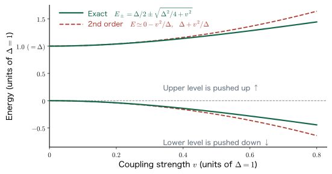
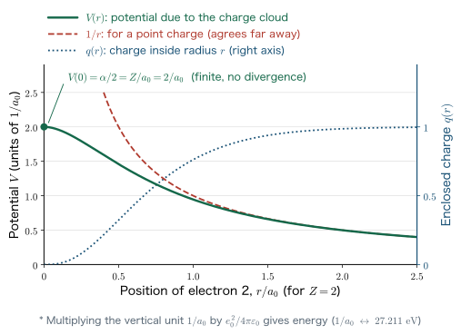
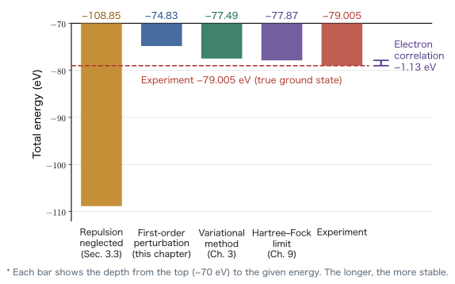

Chapter 4Perturbation Theory
In Chapter 3, we found the ground-state energy of the helium atom by the variational method. The strategy was to attach one adjustable knob, the effective nuclear charge $Z'$, to the trial function and to choose $Z'$ so that the expectation value of the energy is minimized. The variational method, however, carries an inescapable fate: we must decide the form of the trial function ourselves. If we cannot think of a good trial function, the answer will not be good either.
Perturbation theory, which we study in this chapter, starts from a completely different idea. If the difference between “a problem that can be solved exactly” and “the problem we want to solve” is small, we can treat the difference as a small correction term, start from the answer to the solvable problem, and build up the corrections step by step. In the case of the helium atom, the “solvable problem” is a system of two hydrogen-like atoms with the electron–electron repulsion ignored, and the “difference” is the electron–electron repulsion itself. As we saw in Chapter 3, this difference is by no means small, as much as 34 eV; even so, merely including the first-order correction reduces the error in the total energy from 37.8% to 5.3%.
This chapter has two goals. The first is to be able to derive the first- and second-order perturbation formulas from the expansion in the perturbation parameter $\lambda$ without skipping a single line. The second is to be able to carry through to the end, on our own, the calculation of the sixfold integral for the electron–electron repulsion, whose result we merely quoted in Chapter 3,
$\displaystyle \frac{\ee^2}{4\pi\eps}\iint\frac{\abs{\phi(\bm r_1)}^2\abs{\phi(\bm r_2)}^2}{\abs{\bm r_1-\bm r_2}}\dd^3r_1\dd^3r_2=\frac58\frac{Z\ee^2}{4\pi\eps a_0}$
using Gauss's law of electrostatics. This integral shows up all over this book (the Coulomb integral in Chapter 9, the Madelung energy in Chapter 13); it is, so to speak, a calculation to keep for life.
- The idea of perturbation theory: the historical context of moving from the two-body problem to the three-body problem in celestial mechanics
- The decomposition of the helium Hamiltonian $\Ham=\Ham_1^{(0)}+\Ham_2^{(0)}+\Ham^{\mathrm{P}}$, and the exact solution of the unperturbed system $E_n^{(0)}=2Z^2\epsilon_{1s}$
- The expansion in the perturbation parameter $\lambda$, $\psi_n=\psi_n^{(0)}+\lambda\psi_n^{(1)}+\lambda^2\psi_n^{(2)}+\cdots$, and the separation by order as an identity in $\lambda$
- The complete derivation of the first-order perturbation energy $E_n^{(1)}=\bra{\psi_n^{(0)}}\Ham'\ket{\psi_n^{(0)}}$
- The complete derivation of the first-order perturbed wave function $\psi_n=\psi_n^{(0)}-\sum_{i\neq n}\dfrac{\bra{\psi_i^{(0)}}\Ham^{\mathrm{P}}\ket{\psi_n^{(0)}}}{E_i^{(0)}-E_n^{(0)}}\psi_i^{(0)}$
- The second-order perturbation energy $E_n^{(2)}=-\sum_{i\neq n}\dfrac{\abs{\bra{\psi_i^{(0)}}\Ham'\ket{\psi_n^{(0)}}}^2}{E_i^{(0)}-E_n^{(0)}}$, and the fact that the ground state is always lowered (level repulsion)
- The first-order Jahn–Teller effect, the second-order Jahn–Teller effect (SOJT), the electron–lattice interaction, and structural phase transitions
- The complete calculation of the expectation value of the electron–electron repulsion in helium, $\tfrac58 Z\ee^2/(4\pi\eps a_0)=-\tfrac54 Z\epsilon_{1s}$, split into an angular integral and a radial integral
- A comparison of the variational method ($-77.49$ eV) and first-order perturbation theory ($-74.83$ eV), the Hartree–Fock limit ($-77.87$ eV), the electron correlation energy ($-1.13$ eV), and strongly correlated electron systems
In this chapter, too, we use SI units. The two basic quantities obtained in Chapters 2 and 3,
$$ \begin{equation} a_0=\frac{\eps h^2}{\pi m \ee^2}=0.529\times10^{-10}\ \mathrm{m}, \qquad \epsilon_{1s}=-\frac{m \ee^4}{8\eps^2 h^2}=-13.606\ \mathrm{eV} \label{eq:4-constants} \end{equation} $$and the “key to conversion” that connects the two,
$$ \begin{equation} \frac{\ee^2}{4\pi\eps a_0}=-2\epsilon_{1s}=27.211\ \mathrm{eV} \label{eq:4-hartree} \end{equation} $$will be used repeatedly in this chapter as well. As derived in Chapter 3, Eq. \eqref{eq:4-hartree} follows immediately by substituting the defining expression for $a_0$. This quantity ($27.211$ eV) is called the hartree, and it is the natural unit of energy on the atomic scale.
4.1 The Idea of Perturbation Methods
4.1.1 A method that came from celestial mechanics
The origin of perturbation theory is not quantum mechanics. It is celestial mechanics of the 18th and 19th centuries.
A system consisting of the Sun and a single planet, that is, the two-body problem, can be solved exactly from Newton's equation of motion. The answer is a circle, an ellipse, a parabola, or a hyperbola, and the planet traces out a perfect elliptical orbit. The actual solar system, however, has eight planets, and each of them exerts a gravitational attraction on the others. For the three-body problem (three or more planets) and beyond, it is known that in general no analytic solution exists (Poincaré, 1890).
Even so, the astronomers of the 18th and 19th centuries managed to predict the observed positions of the planets with astonishing accuracy. What they used was the perturbation method. The idea is as follows. The gravitational attraction that Jupiter exerts on Saturn is much smaller than the attraction that the Sun exerts on Saturn. Then,
- First, we solve exactly the “two-body problem of the Sun and Saturn alone” and obtain an elliptical orbit.
- Next, we treat the attraction from Jupiter as the cause of a small deviation from that elliptical orbit and calculate the size of the deviation.
A spectacular success of this method was the discovery of Neptune in 1846. The observed position of Uranus deviated slightly from the value calculated by considering only the known planets. Le Verrier and Adams interpreted this deviation as “a perturbation due to a yet unseen eighth planet” and calculated the position on the celestial sphere where such a planet should be. When the Berlin Observatory pointed its telescope in that direction, Neptune was found within one degree of the predicted position. By calculating the deviation (the perturbation), the existence of something not yet seen could be predicted; this is the anecdote that best conveys the power of perturbation theory as a tool.
Why? Why learn another method when we have the variational method?
The variational method of Chapter 3 is powerful, but it has two weaknesses. First, a human must guess the form of the trial function. For helium, the shot in the dark of “reducing the nuclear charge of the hydrogen-like orbital a little” happened to work, but for complicated systems it does not. Second, in principle it can treat only the ground state (the variational principle guarantees only the inequality “the energy is at least the lowest energy,” so it cannot be applied directly to excited states).
Perturbation theory makes up for both. There is no need to guess a trial function; as long as all the solutions of the unperturbed system are available, the calculation proceeds mechanically. Moreover, it can be applied to excited states as it stands. In exchange, it requires the premise that “the perturbation is small.” The variational method and perturbation theory are not competitors; they are different tools in the same toolbox. In Chapter 7, we will place the two side by side and reevaluate the 1s level of helium.
4.1.2 Perturbation methods in quantum mechanics
The idea of the perturbation method in quantum mechanics is exactly the same. Consider a many-electron atom. With a single nucleus and a single electron, we have a hydrogen-like atom, which we solved exactly in Chapter 2. With two electrons, however, we have a three-body problem of nucleus, electron 1, and electron 2, and no exact solution exists (in Chapter 3, Section 3.2, we confirmed by explicit equations that the separation of variables breaks down at the electron–electron repulsion term).
So we think as follows.
Definition: The framework of perturbation methods
Split the Hamiltonian $\Ham$ that we want to solve into a part that can be solved exactly, $\Ham^{(0)}$, and a small remainder, $\Ham^{\mathrm{P}}$:
$$ \Ham=\Ham^{(0)}+\Ham^{\mathrm{P}} . $$$\Ham^{(0)}$ is called the unperturbed Hamiltonian, and $\Ham^{\mathrm{P}}$ is called the perturbation term. The superscript P is the initial of perturbation. For $\Ham^{(0)}$, we assume that all the solutions $\{\psi_n^{(0)},E_n^{(0)}\}$ of the eigenvalue problem
$$ \Ham^{(0)}\psi_n^{(0)}=E_n^{(0)}\psi_n^{(0)} $$are known. The perturbation method is the procedure of constructing approximately the eigenvalues $E_n$ and eigenfunctions $\psi_n$ of $\Ham$ using only these known solutions as raw material.
Example 4.1: Is the perturbation really “small”?
As we saw in Chapter 3, the unperturbed energy of the helium atom (the value with the electron–electron repulsion ignored) is $2Z^2\epsilon_{1s}=-108.85$ eV, and the expectation value of the electron–electron repulsion is $+34.02$ eV. What percentage of the unperturbed energy is the perturbation term? And can it be called “small”?
Solution. Taking the ratio, we get $34.02/108.85=0.313$, that is, about 31%. This is rather large to be called “small.” In fact, the first-order perturbation result obtained in the calculation that follows is $-74.83$ eV, which still has a 5.3% error relative to the experimental value of $-79.005$ eV. Since perturbation theory is a method whose accuracy improves as the perturbation gets smaller, helium is by no means an easy partner for perturbation theory.
There are nevertheless two reasons why it is worth using perturbation theory. First, the $37.8\%$ error incurred by ignoring the electron–electron repulsion altogether falls to $5.3\%$ with just a single expectation-value calculation. Second, and more essentially, perturbation theory is a universal language for handling many-electron systems. The exchange energy in Chapter 9, the van der Waals force in Chapter 13, and electron correlation in solids are all discussed in the language of perturbation theory. Helium is its practice ground.
4.2 Decomposing the Hamiltonian of Helium
Why? Looking at a concrete example before the abstract theory
General perturbation theory is a symbol-dense argument in which the superscripts $(0),(1),(2)$ and the subscripts $n,i,j$ are jumbled together. If we start directly from the general theory, it is easy to lose track of what is being computed. So in this section we first make clear what $\Ham^{(0)}$ and $\Ham^{\mathrm{P}}$ are, using the helium atom as a concrete example. If you read while keeping in the back of your mind which symbol of the general theory corresponds to what, the manipulations of equations from Section 4.3 onward will be “tedious, but not something you can get lost in.” Picturing a concrete example and looking at the equations before presenting the abstract theory—this is a practice that remains effective throughout the study of quantum chemistry.
4.2.1 The five terms of the Hamiltonian
We restate the Hamiltonian of the helium atom (atomic number $Z=2$) written down in Chapter 3. Let the positions of electron 1 and electron 2 be $\bm r_1,\bm r_2$, and let their distances from the nucleus be $r_1=\abs{\bm r_1}$ and $r_2=\abs{\bm r_2}$. Then the Hamiltonian is
$$ \begin{equation} \Ham=\underbrace{\frac{\hat{p}_1^{\,2}}{2m}-\frac{Z\ee^2}{4\pi\eps}\frac{1}{r_1}}_{\Ham_1^{(0)}} +\underbrace{\frac{\hat{p}_2^{\,2}}{2m}-\frac{Z\ee^2}{4\pi\eps}\frac{1}{r_2}}_{\Ham_2^{(0)}} +\underbrace{\frac{\ee^2}{4\pi\eps}\frac{1}{\abs{\bm r_1-\bm r_2}}}_{\Ham^{\mathrm{P}}} \label{eq:4-he-hamiltonian} \end{equation} $$Here $\hat{p}_i^{\,2}/2m=-\dfrac{\hbar^2}{2m}\nabla_i^2$ is the kinetic energy operator of electron $i$. The decomposition in Eq. \eqref{eq:4-he-hamiltonian} can be read as follows.
- The first group $\Ham_1^{(0)}$: the Hamiltonian of a hydrogen-like atom with nuclear charge $Z$, looking at electron 1 only. It was solved exactly in Chapter 2.
- The second group $\Ham_2^{(0)}$: the same thing for electron 2.
- The third term $\Ham^{\mathrm{P}}$: the Coulomb repulsion between electron 1 and electron 2. Only this term contains both $\bm r_1$ and $\bm r_2$, and it is the culprit that destroys the separation of variables.
Therefore it is natural to choose the unperturbed Hamiltonian and the perturbation term as
$$ \begin{equation} \Ham^{(0)}=\Ham_1^{(0)}+\Ham_2^{(0)}, \qquad \Ham^{\mathrm{P}}=\frac{\ee^2}{4\pi\eps}\frac{1}{\abs{\bm r_1-\bm r_2}} \label{eq:4-h0-split} \end{equation} $$This way of choosing is faithful to the principle “take as much of the solvable part as possible, and relegate only the cause of unsolvability to the perturbation.”
4.2.2 The exact solution of the unperturbed system
$\Ham^{(0)}$ is the sum of an operator for electron 1 and an operator for electron 2, and neither contains the coordinates of the other. Therefore, as we did in Section 3.3 of Chapter 3, separation of variables works perfectly. Recall the eigenvalue problem of the one-electron hydrogen-like atom
$$ \begin{equation} \Ham_1^{(0)}\phi^{(0)}(\bm r_1)=Z^2\epsilon_{1s}\,\phi^{(0)}(\bm r_1), \qquad \phi^{(0)}(\bm r)=\frac{1}{\sqrt{\pi}}\left(\frac{Z}{a_0}\right)^{3/2}e^{-Zr/a_0} \label{eq:4-hydrogenic-1e} \end{equation} $$(the 1s orbital, with principal quantum number $n=1$). We showed in Chapter 2 that the 1s level of a hydrogen-like atom with nuclear charge $Z$ is $Z^2\epsilon_{1s}$. Then the ground-state wave function and energy of the unperturbed system are
Substituting $Z=2$ gives $E_0^{(0)}=2\times4\times(-13.606)=-108.85$ eV, which is the “value that neglects the electron–electron repulsion” obtained in Section 3.3 of Chapter 3. It is as much as 27% lower than the experimental value $-79.005$ eV (it is too low). This is because by discarding the repulsion energy entirely, we overestimate the stability of the system by that amount.
Caution: $n$ is not the principal quantum number but a “state number”
In perturbation theory we make heavy use of the subscript $n$ in $\psi_n^{(0)},E_n^{(0)}$, but this is the number that results from listing the eigenstates of the unperturbed Hamiltonian $\Ham^{(0)}$ by serial numbers. It is a different thing from the principal quantum number $n$ of the hydrogen atom, so please do not confuse the two. In this book we take the ground state to be $n=0$ ($E_0^{(0)}\le E_1^{(0)}\le E_2^{(0)}\le\cdots$). This is the meaning in which the lecture slides also wrote “ground state ($n=0$, 1s state).”
Also, some textbooks write the unperturbed state as $\ket{n^{(0)}}$ and the perturbation term as $\hat V$ or $\hat{H}_1$ (Szabo–Ostlund uses $\hat V$, and Atkins uses $H^{(1)}$). The symbols differ, but the content is the same.
Example 4.2: Is the unperturbed wave function normalized?
Verify that $\psi_0^{(0)}$ in Eq. \eqref{eq:4-psi0-product} is normalized, that is, that $\displaystyle\iint\abs{\psi_0^{(0)}}^2\dd^3r_1\dd^3r_2=1$.
Solution. Since the integral separates variable by variable, we obtain
$$ \iint\abs{\phi^{(0)}(\bm r_1)}^2\abs{\phi^{(0)}(\bm r_2)}^2\dd^3r_1\dd^3r_2 =\left(\int\abs{\phi^{(0)}(\bm r)}^2\dd^3r\right)^2 $$Let $\zeta\equiv Z/a_0$, and use the three-dimensional integral of a spherically symmetric function, $\int f(r)\dd^3r=4\pi\int_0^\infty f(r)r^2\dd r$, together with the integral formula $\int_0^\infty r^ne^{-ar}\dd r=n!/a^{n+1}$. Then
$$ \int\abs{\phi^{(0)}}^2\dd^3r=\frac{\zeta^3}{\pi}\cdot4\pi\int_0^\infty e^{-2\zeta r}r^2\dd r =4\zeta^3\cdot\frac{2!}{(2\zeta)^3}=4\zeta^3\cdot\frac{2}{8\zeta^3}=1 . $$Hence the square is also 1, and the wave function is normalized. In the expectation-value calculations that follow, the denominator is 1, so we may simply compute $\braket{\Ham^{\mathrm{P}}}=\bra{\psi_0^{(0)}}\Ham^{\mathrm{P}}\ket{\psi_0^{(0)}}$ as it stands.
4.3 Expansion in the Perturbation Parameter $\lambda$
From here on we enter the general theory. Below we assume no particular system, and we assume that the eigenvalue problem of $\Ham^{(0)}$ has been solved completely for all states:
$$ \begin{equation} \Ham^{(0)}\psi_n^{(0)}=E_n^{(0)}\psi_n^{(0)} \qquad (n=0,1,2,\dots) \label{eq:4-unperturbed} \end{equation} $$The set $\{\psi_n^{(0)}\}$ forms an orthonormal complete set (Section 3.4 of Chapter 3):
$$ \begin{equation} \braket{\psi_j^{(0)}|\psi_i^{(0)}}=\delta_{ji}, \qquad \sum_i\ket{\psi_i^{(0)}}\bra{\psi_i^{(0)}}=\hat{\mathbb{1}} . \label{eq:4-orthonormal} \end{equation} $$4.3.1 Adding the perturbation “little by little”
If we add the whole perturbation term $\Ham^{\mathrm{P}}$ all at once, both the wave function and the energy change greatly, and we do not know where to start. So we adopt the device of opening the perturbation gradually, like a faucet. Introducing a real parameter $\lambda$, we write
$$ \begin{equation} \Ham^{\mathrm{P}}=\lambda\,\Ham', \qquad (0\le\lambda\le1,\ \lambda\ll1) \label{eq:4-hpert} \end{equation} $$For $\lambda=0$ there is no perturbation (that is, we have the exactly solvable unperturbed system), and for $\lambda=1$ we have the original system with the whole perturbation included. $\Ham'$ is an operator that does not contain $\lambda$ and expresses the “form” of the perturbation. The total Hamiltonian then becomes
$$ \begin{equation} \Ham=\Ham^{(0)}+\Ham^{\mathrm{P}}=\Ham^{(0)}+\lambda\,\Ham' \label{eq:4-lambda-split} \end{equation} $$What we want to solve is the eigenvalue problem of this $\Ham$,
$$ \begin{equation} \Ham\psi_n=E_n\psi_n \label{eq:4-schrodinger-full} \end{equation} $$that is, to find its solutions $\psi_n,E_n$.
Why? Why does it pay to introduce the “extra” $\lambda$?
Since $\lambda$ will be set to 1 in the end, it seems at first glance a useless gadget. However, once we introduce $\lambda$, we gain a decisive advantage: $\psi_n$ and $E_n$ become functions of $\lambda$. Once they are functions, we can make a Taylor expansion about $\lambda=0$. The values at $\lambda=0$ are known (the unperturbed solution), so all we have to do is determine the Taylor coefficients one by one—this trick of “reducing an unknown quantity to a power series in a parameter” is a standard strategy that appears in every area of physics.
Another advantage is that we can use the argument of the next subsection, “since it is an identity in $\lambda$, we may compare coefficients.” Without $\lambda$, there would be no justification for separating the equations order by order.
4.3.2 Expanding the wave function and energy in power series
We expand $\psi_n$ and $E_n$ in power series in $\lambda$ (you may regard this as a Taylor expansion):
$$ \begin{equation} \psi_n=\psi_n^{(0)}+\lambda\,\psi_n^{(1)}+\lambda^2\,\psi_n^{(2)}+\cdots \label{eq:4-psi-expansion} \end{equation} $$ $$ \begin{equation} E_n=E_n^{(0)}+\lambda\,E_n^{(1)}+\lambda^2\,E_n^{(2)}+\cdots \label{eq:4-energy-expansion} \end{equation} $$Here we call $\psi_n^{(1)},\psi_n^{(2)}$ the first-order perturbed wave function and the second-order perturbed wave function, respectively, and $E_n^{(1)},E_n^{(2)}$ the first-order perturbation energy and the second-order perturbation energy, respectively. It is immediately clear from the form of the expansion that $\psi_n\to\psi_n^{(0)}$ and $E_n\to E_n^{(0)}$ in the limit $\lambda\to0$. This is the obvious requirement that “if we switch off the perturbation, we return to the unperturbed system,” and it confirms that the expansion has the right form.
4.3.3 Substituting and sorting by order in $\lambda$
From here on comes the “tedious but simple” work. We substitute Eq. \eqref{eq:4-lambda-split} and Eq. \eqref{eq:4-psi-expansion} into the left-hand side of Eq. \eqref{eq:4-schrodinger-full}.
$$ \begin{align} \Ham\psi_n &=\left(\Ham^{(0)}+\lambda\Ham'\right)\left(\psi_n^{(0)}+\lambda\psi_n^{(1)}+\lambda^2\psi_n^{(2)}+\cdots\right) \nonumber\\[4pt] &=\Ham^{(0)}\psi_n^{(0)} +\lambda\left(\Ham'\psi_n^{(0)}+\Ham^{(0)}\psi_n^{(1)}\right) +\lambda^2\left(\Ham'\psi_n^{(1)}+\Ham^{(0)}\psi_n^{(2)}\right)+\cdots \label{eq:4-lhs-expand} \end{align} $$In the second line, we collected the terms having the same power of $\lambda$. For example, the $\lambda^1$ term comes from two sources: the product of $\lambda\Ham'$ and $\psi_n^{(0)}$, and the product of $\Ham^{(0)}$ and $\lambda\psi_n^{(1)}$. The $\lambda^2$ term likewise comes from two sources.
We do the same on the right-hand side. It is the product of Eq. \eqref{eq:4-energy-expansion} and Eq. \eqref{eq:4-psi-expansion}:
$$ \begin{align} E_n\psi_n &=\left(E_n^{(0)}+\lambda E_n^{(1)}+\lambda^2E_n^{(2)}+\cdots\right)\left(\psi_n^{(0)}+\lambda\psi_n^{(1)}+\lambda^2\psi_n^{(2)}+\cdots\right) \nonumber\\[4pt] &=E_n^{(0)}\psi_n^{(0)} +\lambda\left(E_n^{(0)}\psi_n^{(1)}+E_n^{(1)}\psi_n^{(0)}\right) \nonumber\\ &\qquad +\lambda^2\left(E_n^{(0)}\psi_n^{(2)}+E_n^{(1)}\psi_n^{(1)}+E_n^{(2)}\psi_n^{(0)}\right)+\cdots \label{eq:4-rhs-expand} \end{align} $$There are three $\lambda^2$ terms because there are three combinations, $(0)\times(2)$, $(1)\times(1)$, and $(2)\times(0)$. In general, the coefficient of $\lambda^k$ is $\sum_{p=0}^{k}E_n^{(p)}\psi_n^{(k-p)}$.
Now, Eq. \eqref{eq:4-lhs-expand} and Eq. \eqref{eq:4-rhs-expand} are equal. Here we take the decisive step.
Math Note: Why does equality hold “order by order”?
$\lambda$ is a parameter that we can choose freely in the range $0\le\lambda\le1$. Therefore Eq. \eqref{eq:4-lhs-expand} $=$ Eq. \eqref{eq:4-rhs-expand} is not an equality for a particular $\lambda$ but an equality that holds for all $\lambda$, that is, an identity in $\lambda$.
If two power series $\sum_k a_k\lambda^k$ and $\sum_k b_k\lambda^k$ agree for all $\lambda$ in an interval, their coefficients must agree one by one ($a_k=b_k$). Indeed, setting $\lambda=0$ gives $a_0=b_0$; differentiating both sides with respect to $\lambda$ and setting $\lambda=0$ gives $a_1=b_1$; differentiating once more gives $a_2=b_2$; and so on, the coefficients are determined in turn. This is the comparison of coefficients. It is exactly the same argument as “since it is an identity in $x$, compare coefficients” in high school mathematics.
As a result of comparing coefficients, we obtain the following three equations from the orders $\lambda^0,\lambda^1,\lambda^2$.
Eq. \eqref{eq:4-order0} is nothing other than the Schrödinger equation of the unperturbed system, that is, it is already solved. It gives no new information, but it confirms that the expansion starts out consistently. To find the first-order perturbation we solve Eq. \eqref{eq:4-order1}, and to find the second-order perturbation we solve Eq. \eqref{eq:4-order2}. The beauty of this hierarchical structure is that, each time the order goes up, the equation takes a form that can be solved using “the answer of the next lower order” as raw material.
Caution: The perturbation series does not always converge
We wrote “you may regard this as a Taylor expansion” for Eqs. \eqref{eq:4-psi-expansion} and \eqref{eq:4-energy-expansion}, but this is not strictly guaranteed. Whether the perturbation series converges at $\lambda=1$ depends on the system. In fact, the perturbation series of quantum electrodynamics and the higher-order terms of many-body perturbation theory are known to be divergent asymptotic series. Even so, truncating at low order gives a good approximation, so in practice this is often not a problem.
In this book we treat only up to first and second order. As long as the premise that “the perturbation is small” holds, the low-order terms dominate and the truncation is justified. Conversely, in systems with a large perturbation (strongly correlated electron systems, Section 4.8), perturbation theory itself breaks down and another method is needed.
4.4 Derivation of the First-Order Perturbation Energy
We are finally ready to solve Eq. \eqref{eq:4-order1}. The goal of this section is to arrive at a single-line conclusion:
$$ E_n^{(1)}=\bra{\psi_n^{(0)}}\Ham'\ket{\psi_n^{(0)}} $$The conclusion is surprisingly simple, but if we follow the path to it carefully, we will see that Section 4.5 (the wave function) and Section 4.6 (the second-order energy) repeat the same procedure.
4.4.1 Expanding the unknown $\psi_n^{(1)}$ in known functions
Equation \eqref{eq:4-order1} contains two unknown quantities: $E_n^{(1)}$ (a number) and $\psi_n^{(1)}$ (a function). A function is awkward to handle as it is, so we expand it in a known set of functions and turn it into a collection of numbers. What we use here is the fact that the eigenfunctions $\{\psi_i^{(0)}\}$ of the unperturbed system form a complete set (Eq. \eqref{eq:4-orthonormal}). That is, we can write
$$ \begin{equation} \psi_n^{(1)}=\sum_{i=0}^{\infty}c_i\,\psi_i^{(0)} \label{eq:4-psi1-expansion} \end{equation} $$The expansion coefficients $c_i$ are the new unknowns. The problem of finding a function has been transformed into the problem of finding a sequence of numbers $\{c_i\}$.
Why? Let us recall Fourier series
A Fourier series writes a periodic function as a superposition of $\sin$ and $\cos$. This is possible because $\{\sin nx,\cos nx\}$ forms a complete set for functions on the interval $[0,2\pi]$. Equation \eqref{eq:4-psi1-expansion} rests on exactly the same idea: it expands the unknown function in $\{\psi_i^{(0)}\}$, a “quantum-mechanical version of the Fourier basis.”
This trick of “expanding in a complete set to turn an unknown function into unknown coefficients” will be repeated many times in the rest of this book. In Chapters 5 and 6 we expand atomic orbitals as sums of Gaussian functions, and in Chapter 11 we write molecular orbitals as linear combinations of atomic orbitals (LCAO). The set of functions used for an expansion is called basis functions. In perturbation theory, the eigenfunctions of the unperturbed system can be used as they are as the best basis functions.
4.4.2 Substituting into the first-order equation
Let us substitute Eq. \eqref{eq:4-psi1-expansion} into Eq. \eqref{eq:4-order1}. First, the left-hand side. The second term is multiplied by $\Ham^{(0)}$, but since $\Ham^{(0)}$ is a linear operator it can be moved inside the sum, and we can further use $\Ham^{(0)}\psi_i^{(0)}=E_i^{(0)}\psi_i^{(0)}$:
$$ \begin{align} (\text{LHS}) &=\Ham'\psi_n^{(0)}+\Ham^{(0)}\sum_{i=0}^{\infty}c_i\psi_i^{(0)} \nonumber\\ &=\Ham'\psi_n^{(0)}+\sum_{i=0}^{\infty}c_i\,\Ham^{(0)}\psi_i^{(0)} \nonumber\\ &=\Ham'\psi_n^{(0)}+\sum_{i=0}^{\infty}c_i\,E_i^{(0)}\psi_i^{(0)} \label{eq:4-order1-lhs} \end{align} $$This is the technical crux of perturbation theory. The action of the unknown operator, $\Ham^{(0)}\psi_n^{(1)}$, has turned into a multiplication by the known numbers $E_i^{(0)}$. Here the benefit of introducing the expansion \eqref{eq:4-psi1-expansion} appears.
Next, the right-hand side. Here we only need to substitute:
$$ \begin{equation} (\text{RHS})=E_n^{(1)}\psi_n^{(0)}+E_n^{(0)}\sum_{i=0}^{\infty}c_i\psi_i^{(0)} . \label{eq:4-order1-rhs} \end{equation} $$Setting Eq. \eqref{eq:4-order1-lhs} $=$ Eq. \eqref{eq:4-order1-rhs} and collecting the sums containing $c_i$ on the left-hand side, we obtain
At last, everything is written only in terms of quantities of the unperturbed system ($\psi_i^{(0)}$, $E_i^{(0)}$, $\Ham'$) and unknown numbers ($c_i$, $E_n^{(1)}$). From here on, the task is to take inner products and extract the numbers.
4.4.3 Multiplying by $\bra{\psi_n^{(0)}}$
Let us rewrite Eq. \eqref{eq:4-order1-reduced} in bra–ket notation. Expressing the functions as kets, we have
$$ \Ham'\ket{\psi_n^{(0)}}+\sum_{i=0}^{\infty}c_i\left(E_i^{(0)}-E_n^{(0)}\right)\ket{\psi_i^{(0)}}=E_n^{(1)}\ket{\psi_n^{(0)}} $$Multiplying both sides from the left by $\bra{\psi_n^{(0)}}$ (that is, taking the inner product with $\psi_n^{(0)}$), we obtain
$$ \begin{equation} \bra{\psi_n^{(0)}}\Ham'\ket{\psi_n^{(0)}} +\sum_{i=0}^{\infty}c_i\left(E_i^{(0)}-E_n^{(0)}\right)\underbrace{\braket{\psi_n^{(0)}|\psi_i^{(0)}}}_{\delta_{ni}} =E_n^{(1)}\underbrace{\braket{\psi_n^{(0)}|\psi_n^{(0)}}}_{\delta_{nn}=1} \label{eq:4-project-n} \end{equation} $$Here we have used the orthonormality \eqref{eq:4-orthonormal}. Let us examine the second term on the left-hand side.
- When $i\neq n$: $\delta_{ni}=0$, so that term vanishes.
- When $i=n$: $\delta_{nn}=1$ and the inner product survives, but this time the preceding factor becomes $E_n^{(0)}-E_n^{(0)}=0$.
In other words, in either case the second term on the left-hand side is zero. Since the entire sum disappears, what remains is
Note that not a single $c_i$ appears. To find the first-order perturbation energy, we do not need to know the first-order perturbed wave function. This is one of the most welcome properties of perturbation theory. (This fact is the simplest case of a rule generally called the Wigner $2n+1$ theorem, which states that if the wave functions are known up to order $n$, the energy can be computed up to order $2n+1$.)
4.4.4 Restoring $\lambda$
Equation \eqref{eq:4-first-energy} is an expression in terms of $\Ham'$. In actual use, we want to eliminate $\lambda$ and return to $\Ham^{\mathrm{P}}=\lambda\Ham'$. The first-order term in Eq. \eqref{eq:4-energy-expansion} is $\lambda E_n^{(1)}$, and
$$ \lambda E_n^{(1)}=\bra{\psi_n^{(0)}}\lambda\Ham'\ket{\psi_n^{(0)}}=\bra{\psi_n^{(0)}}\Ham^{\mathrm{P}}\ket{\psi_n^{(0)}} $$holds (since $\lambda$ is a constant, it can be freely moved in and out of the inner product). Therefore, the energy including the first-order perturbation can be written as follows.
Physical Meaning: What is so useful about this equation?
The right-hand side of Eq. \eqref{eq:4-first-energy-hp} contains only quantities of the unperturbed system, which are known exactly. Both $E_n^{(0)}$ and $\psi_n^{(0)}$ are known, and $\Ham^{\mathrm{P}}$ is an operator that we choose ourselves. In other words, we can compute the energy correction without finding the unknown wave function $\psi_n$ at all. Moreover, what we compute is an expectation value, that is, just a single integral.
Put differently, the first-order perturbation energy is “the energy of the perturbation term measured with the electron distribution as it was before the perturbation was switched on.” For helium, it corresponds to “measuring the electrostatic energy of the electron–electron repulsion while keeping the distribution in which two electrons occupy hydrogen-like 1s orbitals.” The effect of the electrons rearranging their configuration to avoid repulsion (electron correlation) is not yet included at this stage. That is the job of the second and higher orders.
Example 4.3: Tilting the floor of a one-dimensional potential well
The eigenfunctions of a one-dimensional infinite well of width $L$ (potential 0 for $0\le x\le L$ and infinite outside) are $\psi_n^{(0)}(x)=\sqrt{2/L}\sin(n\pi x/L)$, and the eigenvalues are $E_n^{(0)}=n^2h^2/(8mL^2)$ ($n=1,2,3,\dots$). A uniform electric field is applied, adding the perturbation $\Ham^{\mathrm{P}}=Fx$ ($F$ is a constant). Find the first-order perturbation energy.
Solution. From Eq. \eqref{eq:4-first-energy-hp},
$$ E_n^{(1)}=\int_0^L\psi_n^{(0)}(x)\,Fx\,\psi_n^{(0)}(x)\,\dd x =\frac{2F}{L}\int_0^L x\sin^2\!\left(\frac{n\pi x}{L}\right)\dd x . $$Using the half-angle formula $\sin^2\theta=\tfrac12(1-\cos2\theta)$, we get
$$ E_n^{(1)}=\frac{F}{L}\int_0^L x\,\dd x-\frac{F}{L}\int_0^L x\cos\!\left(\frac{2n\pi x}{L}\right)\dd x . $$The first term is $\dfrac{F}{L}\cdot\dfrac{L^2}{2}=\dfrac{FL}{2}$. For the second term, integration by parts gives
$$ \int_0^L x\cos(kx)\dd x=\left[\frac{x\sin kx}{k}\right]_0^L+\left[\frac{\cos kx}{k^2}\right]_0^L \qquad\left(k=\frac{2n\pi}{L}\right) $$but since $kL=2n\pi$, we have $\sin kL=0$ and $\cos kL=1$, so both $[\ ]$ are zero. Hence the second term vanishes, and
$$ E_n^{(1)}=\frac{FL}{2} $$is obtained. The result is that every level is raised by the same amount. Physically this is only natural: since $\braket{x}=L/2$ (on average the electron is at the center of the well), we have $\braket{Fx}=FL/2$. The energy rises by the “height at the middle” of the tilted floor. The level spacing does not change at first order. The change in spacing (that is, the effect observed spectroscopically) first appears in second-order perturbation theory.
4.5 Derivation of the First-Order Perturbed Wave Function
We want to know not only the energy but also how the wave function changes. Return to Eq. \eqref{eq:4-order1-reduced}, and this time multiply by a different function. That alone moves the argument forward.
4.5.1 Multiplying by $\bra{\psi_j^{(0)}}$
Consider the equation obtained by writing Eq. \eqref{eq:4-order1-reduced} in terms of kets,
$$ \Ham'\ket{\psi_n^{(0)}}+\sum_{i=0}^{\infty}c_i\left(E_i^{(0)}-E_n^{(0)}\right)\ket{\psi_i^{(0)}}=E_n^{(1)}\ket{\psi_n^{(0)}} $$and multiply both sides from the left by $\bra{\psi_j^{(0)}}$ this time. In the previous section we looked only at the case corresponding to $j=n$; now we treat $j$ as a general index. We then obtain
$$ \begin{equation} \bra{\psi_j^{(0)}}\Ham'\ket{\psi_n^{(0)}} +\sum_{i=0}^{\infty}c_i\left(E_i^{(0)}-E_n^{(0)}\right)\underbrace{\braket{\psi_j^{(0)}|\psi_i^{(0)}}}_{\delta_{ji}} =E_n^{(1)}\underbrace{\braket{\psi_j^{(0)}|\psi_n^{(0)}}}_{\delta_{jn}} \label{eq:4-project-j} \end{equation} $$Note that, unlike in the previous section, the inner product on the right-hand side is $\delta_{jn}$, which is not necessarily 1. Below we split into the cases $j\neq n$ and $j=n$. To keep the notation compact, we abbreviate the matrix element of the perturbation as
$$ \begin{equation} H'_{ji}\equiv\bra{\psi_j^{(0)}}\Ham'\ket{\psi_i^{(0)}} =\int \psi_j^{(0)*}\,\Ham'\,\psi_i^{(0)}\,\dd\tau \label{eq:4-matrix-element} \end{equation} $$(where $\dd\tau$ denotes integration over all the coordinates of the system).
4.5.2 Case 1: $j\neq n$
In this case the right-hand side becomes zero, since $\delta_{jn}=0$. In the sum on the left-hand side, thanks to $\delta_{ji}$ only the term with $i=j$ survives. Therefore Eq. \eqref{eq:4-project-j} turns into
$$ H'_{jn}+c_j\left(E_j^{(0)}-E_n^{(0)}\right)=0 $$a first-degree equation for $c_j$. Assuming $E_j^{(0)}\neq E_n^{(0)}$ and dividing, we obtain
The expansion coefficients have been written entirely in terms of quantities of the unperturbed system.
4.5.3 Case 2: $j=n$
In this case the right-hand side becomes $E_n^{(1)}$, since $\delta_{nn}=1$. In the sum on the left-hand side only the term with $i=n$ remains, but its coefficient is $E_n^{(0)}-E_n^{(0)}=0$, so it vanishes. Hence
$$ H'_{nn}=E_n^{(1)},\qquad\text{that is}\qquad E_n^{(1)}=\bra{\psi_n^{(0)}}\Ham'\ket{\psi_n^{(0)}} $$and Eq. \eqref{eq:4-first-energy}, obtained in Section 4.4, is reproduced exactly. Note that the case $j=n$ gives no information at all about $c_n$. The equation does not determine $c_n$.
Math Note: Why is $c_n$ undetermined, and how do we fix it?
That $c_n$ is undetermined is no accident. Even if we add a constant multiple of $\psi_n^{(0)}$ to $\psi_n^{(1)}$, Eq. \eqref{eq:4-order1} continues to hold in the same way (indeed, since $\Ham^{(0)}\psi_n^{(0)}-E_n^{(0)}\psi_n^{(0)}=0$, the term containing $c_n$ drops out of the equation completely). This is a manifestation of the familiar freedom in quantum mechanics that “an eigenfunction is arbitrary up to a constant multiple.”
So, by convention, we choose $c_n=0$, that is,
$$ \braket{\psi_n^{(0)}|\psi_n^{(1)}}=0 $$This is called intermediate normalization. It is a natural convention: “take the correction term only in directions orthogonal to the original function.” With this choice, $\braket{\psi_n^{(0)}|\psi_n}=1$ holds exactly.
Note also that this $\psi_n$ is normalized up to first order in $\lambda$. Indeed,
$$ \braket{\psi_n|\psi_n}=\braket{\psi_n^{(0)}|\psi_n^{(0)}} +\lambda\left(\braket{\psi_n^{(0)}|\psi_n^{(1)}}+\braket{\psi_n^{(1)}|\psi_n^{(0)}}\right)+O(\lambda^2) =1+0+O(\lambda^2) $$so the deviation from normalization appears only in terms of order $\lambda^2$ and higher.
4.5.4 The first-order perturbed wave function
Let us put the above together. Truncating Eq. \eqref{eq:4-psi-expansion} at first order, substituting Eq. \eqref{eq:4-psi1-expansion} and Eq. \eqref{eq:4-cj}, and setting $c_n=0$, we obtain
$$ \begin{align} \psi_n&=\psi_n^{(0)}+\lambda\,\psi_n^{(1)} =\psi_n^{(0)}+\lambda\sum_{i=0}^{\infty}c_i\psi_i^{(0)} \nonumber\\ &=\psi_n^{(0)}-\lambda\sum_{i\neq n}\frac{\bra{\psi_i^{(0)}}\Ham'\ket{\psi_n^{(0)}}}{E_i^{(0)}-E_n^{(0)}}\psi_i^{(0)} \end{align} $$Finally, restoring $\lambda\Ham'=\Ham^{\mathrm{P}}$, we arrive at the following final form.
Physical Meaning: Reading how the wave function “mixes”
Equation \eqref{eq:4-first-wavefunction} shows that the perturbed state $\psi_n$ is “the original state $\psi_n^{(0)}$ with the other states $\psi_i^{(0)}$ mixed in a little at a time.” The amount of mixing is determined by the fraction
$$ \frac{\bra{\psi_i^{(0)}}\Ham^{\mathrm{P}}\ket{\psi_n^{(0)}}}{E_i^{(0)}-E_n^{(0)}} $$Let us remember how to read this fraction.
- The larger the numerator (the matrix element of the perturbation), the stronger the mixing. Conversely, a partner for which $\bra{\psi_i^{(0)}}\Ham^{\mathrm{P}}\ket{\psi_n^{(0)}}=0$ for symmetry reasons does not mix, however close it is in energy. This “selection rule from symmetry” is the subject of Chapter 12.
- The smaller the denominator (the energy difference), the stronger the mixing. It helps to remember that states close in energy get along well. This intuition works extremely well when we discuss the symmetry of molecules or the band structure of solids qualitatively.
These two points are nothing other than the empirical rule of chemical bonding that “the interaction between orbitals is stronger the closer their energies and the larger their overlap.” We may say that the secular equation of Chapter 11 and the symmetry arguments of Chapter 12 are both exercises in evaluating the numerator and the denominator of this fraction.
Caution: With degeneracy, this formula cannot be used
The denominator $E_j^{(0)}-E_n^{(0)}$ in Eq. \eqref{eq:4-cj} becomes zero if $\psi_j^{(0)}$ and $\psi_n^{(0)}$ are degenerate (have the same energy), and then $c_j$ diverges. Therefore the formula derived in this section is called non-degenerate perturbation theory, and it can be used only for levels without degeneracy.
When there is degeneracy, we first construct the perturbation matrix $H'_{ji}$ within the degenerate subspace and diagonalize it, determine the “correct zeroth-order wave functions selected by the perturbation,” and only then begin the perturbation calculation. This is called degenerate perturbation theory. The Jahn–Teller effect, treated in the next section, is precisely a phenomenon in which degenerate perturbation theory plays the leading role.
Example 4.4: Estimating the magnitude of the mixing
In a certain system, state $a$ lies below state $n$ (energy difference $E_a^{(0)}-E_n^{(0)}=-1.0$ eV) and state $b$ lies above it (energy difference $+10.0$ eV), and the matrix elements of the perturbation are both $H^{\mathrm{P}}=0.20$ eV. Find the coefficients of $\psi_a^{(0)}$ and $\psi_b^{(0)}$ mixed into $\psi_n$, and answer which mixes more strongly.
Solution. The coefficient in Eq. \eqref{eq:4-first-wavefunction} is $-H^{\mathrm{P}}/(E_i^{(0)}-E_n^{(0)})$, so
$$ c_a=-\frac{0.20}{-1.0}=+0.20,\qquad c_b=-\frac{0.20}{+10.0}=-0.020 . $$$\abs{c_a}$ is 10 times $\abs{c_b}$, and $\psi_a^{(0)}$, which is closer in energy, mixes 10 times more strongly. Even if the matrix elements are the same, the energy denominator matters. The sign also carries meaning. The state lying below ($c_a\gt0$) is added with the same sign, and the state lying above ($c_b\lt0$) is added with the opposite sign. This difference in sign is the origin of the level repulsion that we will see in the next section.
4.6 The Second-Order Perturbation Energy and Its Physical Meaning
4.6.1 Derivation of the second-order perturbation energy
The second-order perturbation energy is obtained simply by multiplying Eq. \eqref{eq:4-order2} by $\bra{\psi_n^{(0)}}$. The procedure is exactly the same as before. Multiplying both sides of Eq. \eqref{eq:4-order2} by $\bra{\psi_n^{(0)}}$, we obtain
$$ \bra{\psi_n^{(0)}}\Ham'\ket{\psi_n^{(1)}}+\bra{\psi_n^{(0)}}\Ham^{(0)}\ket{\psi_n^{(2)}} =E_n^{(2)}\underbrace{\braket{\psi_n^{(0)}|\psi_n^{(0)}}}_{=1} +E_n^{(1)}\underbrace{\braket{\psi_n^{(0)}|\psi_n^{(1)}}}_{=0} +E_n^{(0)}\braket{\psi_n^{(0)}|\psi_n^{(2)}} $$Here we used the intermediate normalization $\braket{\psi_n^{(0)}|\psi_n^{(1)}}=0$. Since $\Ham^{(0)}$ is a Hermitian operator, the second term on the left-hand side can be made to act to the left, which gives
$$ \bra{\psi_n^{(0)}}\Ham^{(0)}\ket{\psi_n^{(2)}} =\left(\Ham^{(0)}\psi_n^{(0)},\ \psi_n^{(2)}\right) =E_n^{(0)}\braket{\psi_n^{(0)}|\psi_n^{(2)}} $$(since $E_n^{(0)}$ is real, taking the complex conjugate does not change it). This is exactly the same as the third term on the right-hand side, so it cancels from both sides. What remains is
$$ E_n^{(2)}=\bra{\psi_n^{(0)}}\Ham'\ket{\psi_n^{(1)}} $$Substituting Eq. \eqref{eq:4-psi1-expansion} and Eq. \eqref{eq:4-cj} (together with $c_n=0$) here, we obtain
$$ \begin{align} E_n^{(2)} &=\sum_{i\neq n}c_i\,\bra{\psi_n^{(0)}}\Ham'\ket{\psi_i^{(0)}} =\sum_{i\neq n}c_i\,H'_{ni} \nonumber\\ &=-\sum_{i\neq n}\frac{H'_{in}\,H'_{ni}}{E_i^{(0)}-E_n^{(0)}} =-\sum_{i\neq n}\frac{\abs{H'_{in}}^2}{E_i^{(0)}-E_n^{(0)}} \end{align} $$In the last equality we used the fact that, because $\Ham'$ is Hermitian, $H'_{ni}=(H'_{in})^*$, and hence $H'_{in}H'_{ni}=\abs{H'_{in}}^2$. Restoring $\lambda$ and writing the result up to second order, we arrive at the final form below.
Physical Meaning: The ground-state energy always falls (level repulsion)
Let us look at the third term of Eq. \eqref{eq:4-second-energy} for the ground state $n=0$. The numerator $\abs{\bra{\psi_i^{(0)}}\Ham^{\mathrm{P}}\ket{\psi_0^{(0)}}}^2$ is the square of an absolute value, so it is always nonnegative. The denominator $E_i^{(0)}-E_0^{(0)}$ refers, as long as $i\neq0$, to a level above the ground state, so it is always positive. The whole term carries a minus sign. Therefore
$$ E_0^{(2)}=-\sum_{i\neq0}\frac{\abs{\bra{\psi_i^{(0)}}\Ham^{\mathrm{P}}\ket{\psi_0^{(0)}}}^2}{E_i^{(0)}-E_0^{(0)}}\ \le\ 0 $$always holds. In other words, second-order perturbation always stabilizes the ground state. Whatever the form of the perturbation, and whatever its sign, the ground state is lowered.
In general, second-order perturbation works as follows: “a level is pushed up by the levels below it and pushed down by the levels above it.” Two interacting levels move in the direction of moving away from each other—this is called level repulsion. Since the ground state has no level below it, it can only be pushed down. This simple fact lies behind a surprisingly wide range of phenomena, from the stabilization of chemical bonds, the van der Waals force (Chapter 13), and the Jahn–Teller effect to superconductivity.
4.6.2 Checking with a two-level model
Let us check how level repulsion works with the smallest example that can be solved by hand. Consider a system with only two states, and write the Hamiltonian as a matrix:
$$ \begin{equation} \Ham=\begin{pmatrix}0 & v\\ v & \Delta\end{pmatrix} =\underbrace{\begin{pmatrix}0&0\\0&\Delta\end{pmatrix}}_{\Ham^{(0)}} +\underbrace{\begin{pmatrix}0&v\\v&0\end{pmatrix}}_{\Ham^{\mathrm{P}}} \qquad(\Delta\gt0,\ v\ \text{is real}) \label{eq:4-two-level} \end{equation} $$The eigenvalues of the unperturbed system are $E_0^{(0)}=0$ and $E_1^{(0)}=\Delta$, and the eigenvectors are $(1,0)^{\mathrm T}$ and $(0,1)^{\mathrm T}$. The matrix elements of the perturbation are $H^{\mathrm{P}}_{01}=H^{\mathrm{P}}_{10}=v$, and the diagonal elements are 0.
Prediction of perturbation theory: The first-order perturbation energy is a diagonal element, so it is zero, and the second-order perturbation energy, from Eq. \eqref{eq:4-second-energy}, gives
$$ E_0\simeq0-\frac{v^2}{\Delta-0}=-\frac{v^2}{\Delta}, \qquad E_1\simeq\Delta-\frac{v^2}{0-\Delta}=\Delta+\frac{v^2}{\Delta} . $$Exact solution: The eigenvalues of a $2\times2$ matrix follow from the secular equation $\det(\Ham-E\hat{\mathbb{1}})=0$, that is, $E^2-\Delta E-v^2=0$, which gives
$$ \begin{equation} E_\pm=\frac{\Delta}{2}\pm\sqrt{\frac{\Delta^2}{4}+v^2} \label{eq:4-two-level-exact} \end{equation} $$For $v/\Delta\ll1$, expanding the square root gives
$$ \sqrt{\frac{\Delta^2}{4}+v^2}=\frac{\Delta}{2}\sqrt{1+\frac{4v^2}{\Delta^2}} \simeq\frac{\Delta}{2}\left(1+\frac{2v^2}{\Delta^2}\right)=\frac{\Delta}{2}+\frac{v^2}{\Delta} $$(where we used $\sqrt{1+x}\simeq1+x/2$), and we obtain $E_-\simeq-v^2/\Delta$ and $E_+\simeq\Delta+v^2/\Delta$. This agrees exactly with the prediction of perturbation theory. The lower level falls and the upper level rises by the same amount—precisely level repulsion.

Example 4.5: How far can perturbation theory be trusted?
Let $\Delta=1$ in Eq. \eqref{eq:4-two-level}. For each of $v=0.2$ and $v=0.8$, compare the exact value of the lower level with the second-order perturbation value, and find the relative error.
Solution. The exact value is $E_-=0.5-\sqrt{0.25+v^2}$, and the perturbation value is $-v^2$.
- $v=0.2$: $E_-=0.5-\sqrt{0.29}=0.5-0.5385=-0.0385$, and the perturbation value is $-0.0400$. The error is $0.0015$, a relative error of $3.9\%$.
- $v=0.8$: $E_-=0.5-\sqrt{0.89}=0.5-0.9434=-0.4434$, and the perturbation value is $-0.6400$. The error is $0.197$, a relative error of $44\%$.
If the perturbation $v$ is about 20% of the level spacing $\Delta$, perturbation theory is usable to within a few percent, but at 80% it is useless. The condition that “the perturbation is small compared with the level spacing” can be quantified in the form $\abs{H^{\mathrm{P}}_{in}}\ll\abs{E_i^{(0)}-E_n^{(0)}}$. In the case of helium, the perturbation (34 eV) is as large as the unperturbed level spacing (the difference between 1s and 2s is about $Z^2\epsilon_{1s}(1-1/4)=40.8$ eV). That perturbation theory kept the error to only 5.3% was, if anything, a stroke of luck.
4.6.3 The first-order Jahn–Teller effect
From here on, as an example of how perturbation theory is used in the practice of materials science, we introduce the Jahn–Teller effect. This is the phenomenon in which “a change in the electronic energy levels causes the atomic nuclei to move,” and it is indispensable for understanding structural phase transitions.
Consider a transition metal complex with octahedral coordination ($O_h$ symmetry). The five $d$ orbitals of the central metal ion are split into two groups by the electrostatic field created by the six ligands (crystal-field splitting).
- $e_g$: the two orbitals $d_{z^2}$ and $d_{x^2-y^2}$. They point toward the ligands, so the repulsion is strong and the energy is high.
- $t_{2g}$: the three orbitals $d_{xy}$, $d_{yz}$, and $d_{zx}$. They run between the ligands, so the repulsion is weak and the energy is low.
Now consider the situation in which only one electron occupies the $e_g$ orbitals (for example, $d^4$ of Mn$^{3+}$ or $d^9$ of Cu$^{2+}$). Since $e_g$ is doubly degenerate, the energy is the same whichever of the two orbitals the electron enters; that is, the ground state is degenerate.
Theorem: The Jahn–Teller theorem (1937)
Except for linear molecules, a nonlinear molecule or complex whose electronic state is degenerate necessarily distorts its structure spontaneously in the direction that lifts the degeneracy, thereby lowering its energy.
Indeed, when the octahedron is elongated along the $z$ axis ($O_h\to D_{4h}$), the ligands on the $z$ axis move away, so $d_{z^2}$ is stabilized; conversely, the ligands in the $xy$ plane move closer, so $d_{x^2-y^2}$ is destabilized. The degeneracy of $e_g$ is lifted, and the electron enters the lowered $d_{z^2}$ ($a_{1g}$), so the energy of the whole system falls.
This stabilization is proportional to the first power of the distortion $Q$. If we write the perturbation due to the distortion as $\Ham^{\mathrm{P}}=Q(\partial\Ham/\partial Q)$, then simply carrying out first-order perturbation theory within the degenerate subspace (that is, degenerate perturbation theory) gives a splitting of $\pm\abs{Q}\times(\text{constant})$. On the other hand, the elastic energy required to move the nuclei is $\tfrac12 kQ^2$, which is second order. Therefore, where $Q$ is small, the first-order gain necessarily exceeds the second-order loss, and $Q=0$ becomes unstable. This is the first-order Jahn–Teller effect.
Caution: The symbol $e_g$ appears twice
In Figure 4.4, the upper level in $O_h$ is written $e_g$, and the pair $d_{xz},d_{yz}$ in $D_{4h}$ is also written $e_g$. This is not a misprint; it is merely that irreducible representations of different point groups happen to have been given the same name ($e$ is the symbol for “doubly degenerate” and $g$ is the symbol for “symmetric under the inversion operation (gerade),” so in either point group the label satisfying the same conditions is $e_g$). That the same symbol has different content when the point group changes is an unavoidable feature of the notation of group theory. We will treat this carefully in Chapter 12.
4.6.4 The second-order Jahn–Teller effect (SOJT) and structural phase transitions
The first-order Jahn–Teller effect came with the strong condition that “the ground state is degenerate.” The Ti$^{4+}$ ($d^0$) in a closed-shell insulator such as BaTiO$_3$ is not degenerate, so the first-order Jahn–Teller effect does not occur. Nevertheless, below room temperature BaTiO$_3$ undergoes a phase transition into a ferroelectric phase in which Ti is displaced from the center. The mechanism that explains this is the second-order Jahn–Teller effect (SOJT).
Consider the perturbation due to a displacement $Q$ of the nuclei, and expand the ground-state energy up to second order in $Q$. Using Eq. \eqref{eq:4-second-energy}, the change in the energy of the electronic system is
$$ \begin{equation} \Delta E_{\text{el}}(Q)=\underbrace{Q\bra{\psi_0^{(0)}}\frac{\partial\Ham}{\partial Q}\ket{\psi_0^{(0)}}}_{\text{first order}} -\underbrace{Q^2\sum_{i\neq0}\frac{\abs{\bra{\psi_i^{(0)}}\partial\Ham/\partial Q\ket{\psi_0^{(0)}}}^2}{E_i^{(0)}-E_0^{(0)}}}_{\text{second order (always negative)}} \label{eq:4-sojt} \end{equation} $$In a structure of high symmetry, the first-order term vanishes for reasons of symmetry, so what remains is the necessarily negative second-order term. On the other hand, the elastic energy required to move the nuclei is $+\tfrac12kQ^2$. Therefore the total energy is
$$ E(Q)\simeq\frac12\left(k-2\sum_{i\neq0}\frac{\abs{\bra{\psi_i^{(0)}}\partial\Ham/\partial Q\ket{\psi_0^{(0)}}}^2}{E_i^{(0)}-E_0^{(0)}}\right)Q^2 $$and if the quantity in parentheses becomes negative, $Q=0$ becomes unstable and the structure distorts. As can be seen from the denominator of Eq. \eqref{eq:4-sojt}, the conditions under which the quantity in parentheses becomes negative are
- there is an excited state just above the ground state ($E_i^{(0)}-E_0^{(0)}$ is small, that is, the band gap is small), and
- the matrix element with that excited state is large (that is, the combination is allowed by symmetry, and orbital hybridization occurs easily).
In BaTiO$_3$, the energy difference between the O $2p$ orbitals (occupied) and the Ti $3d$ orbitals (empty) is small, and when Ti is displaced the two hybridize strongly. That this is the origin of ferroelectricity is the explanation given by SOJT.
Physical Meaning: The electron–lattice interaction determines the character of a material
The effect in which “a change in the electronic energy levels influences the motion of the atomic nuclei” is generally called the electron–lattice interaction (also called the electron–phonon interaction). The two Jahn–Teller effects we have seen in this section are both typical examples of it.
- Static electron–lattice interaction: The nuclei are displaced and fixed at specific positions. This is a structural phase transition, and it gives rise to ferroelectricity, metal–insulator transitions, charge ordering, and so on.
- Dynamic electron–lattice interaction: Electrons feel an attraction to one another indirectly through the vibrations of the nuclei (phonons). This is the origin of superconductivity (BCS theory).
In both cases, the starting point is the second-order perturbation formula \eqref{eq:4-second-energy} that we derived in this section. In a first-principles calculation, this $\Delta E_{\text{el}}(Q)$ is actually evaluated numerically to predict which distortion occurs. In the course instructor’s research as well, the search for novel semiconductors among antiperovskite (inverse perovskite) compounds [5], the origin of ferroelectricity in the layered perovskite Li$_2$SrNb$_2$O$_7$ [7], and metal–insulator transitions induced by epitaxial strain [6] have been discussed within this framework.
4.7 Application to the Helium Atom — Calculating the Electron–Electron Repulsion Completely
Here we reach the highlight of this chapter. Using the tools prepared in Section 4.2, we calculate to the end the first-order perturbation energy of the helium atom,
$$ \begin{equation} E_0^{(1)}=\bra{\psi_0^{(0)}}\Ham^{\mathrm{P}}\ket{\psi_0^{(0)}} =\bra{\psi_0^{(0)}}\frac{\ee^2}{4\pi\eps}\frac{1}{\abs{\bm r_1-\bm r_2}}\ket{\psi_0^{(0)}} \label{eq:4-he-first-order-def} \end{equation} $$This is exactly the integral for which we promised in Chapter 3, Section 3.5.7, to “quote only the result.” It is a six-fold integral, but if we make good use of symmetry, we can finish it with paper and pen. We do not omit any intermediate steps.
4.7.1 What are we going to calculate?
Substituting $\psi_0^{(0)}=\phi^{(0)}(\bm r_1)\phi^{(0)}(\bm r_2)$ from Eq. \eqref{eq:4-psi0-product}, the constant $\ee^2/4\pi\eps$ can be taken outside the integral, and we obtain
$$ \begin{equation} E_0^{(1)}=\frac{\ee^2}{4\pi\eps}\,I, \qquad I\equiv\iint\frac{\abs{\phi^{(0)}(\bm r_1)}^2\,\abs{\phi^{(0)}(\bm r_2)}^2}{\abs{\bm r_1-\bm r_2}}\,\dd^3r_1\,\dd^3r_2 \label{eq:4-coulomb-integral-def} \end{equation} $$Our goal is to find $I$ (a quantity with the dimension of an inverse length). Here we write the probability density of the electron as
$$ \begin{equation} \rho(r)\equiv\abs{\phi^{(0)}(\bm r)}^2=\frac{1}{\pi}\left(\frac{Z}{a_0}\right)^3e^{-2Zr/a_0} =\frac{Z^3}{\pi a_0^3}e^{-2Zr/a_0} \label{eq:4-rho-def} \end{equation} $$As we confirmed in Example 4.2, $\int\rho(r)\dd^3r=1$. It is crucially important that $\rho$ is a function of $r$ alone, that is, spherically symmetric. From here on, to simplify the notation, we put
$$ \begin{equation} \alpha\equiv\frac{2Z}{a_0} \qquad\text{that is}\qquad \rho(r)=\frac{Z^3}{\pi a_0^3}e^{-\alpha r} \label{eq:4-alpha-def} \end{equation} $$The combination $4\pi\rho(r)$ will appear many times later, so let us tidy it up in advance:
$$ \begin{equation} 4\pi\rho(r)=\frac{4Z^3}{a_0^3}e^{-\alpha r}=\frac{\alpha^3}{2}e^{-\alpha r} \label{eq:4-4pirho} \end{equation} $$(since $\alpha^3=8Z^3/a_0^3$, we have $\alpha^3/2=4Z^3/a_0^3$).
Why? Translating a quantum-mechanical integral into electrostatics
Let us reinterpret Eq. \eqref{eq:4-coulomb-integral-def} as follows.
$\rho(\bm r_1)\dd^3r_1$ is “the probability that electron 1 is in the small volume $\dd^3r_1$.” If we regard this as a cloud of charge smeared out in space, then $\rho$ is itself the charge density (in units of the elementary charge). Then Eq. \eqref{eq:4-coulomb-integral-def} is nothing other than
“the electrostatic interaction energy between charge cloud 1 and charge cloud 2.”
The six-fold integral of quantum mechanics has been transformed into a classical electrostatics problem of the kind taught even in high school physics. Moreover, since the charge clouds are spherically symmetric, we can use the powerful weapon of Gauss's law. Whether or not we can make this reinterpretation completely changes how clear the path through the calculation looks.
Following this reinterpretation, we calculate $I$ in two stages. First we find
$$ \begin{equation} V(r_2)\equiv\int\frac{\rho(r_1)}{\abs{\bm r_1-\bm r_2}}\,\dd^3r_1 \label{eq:4-potential-def} \end{equation} $$This is “the electrostatic potential created by charge cloud 1 at the position $\bm r_2$” (the quantity with $\ee^2/4\pi\eps$ removed). Then it suffices to compute
$$ \begin{equation} I=\int\rho(r_2)\,V(r_2)\,\dd^3r_2 \label{eq:4-i-two-step} \end{equation} $$that is, to take the weighted average over charge cloud 2.
4.7.2 Angular integration: the angular average of $1/\abs{\bm r_1-\bm r_2}$
First we carry out the integral in Eq. \eqref{eq:4-potential-def}. Fix $\bm r_2$, and integrate over $\bm r_1$ in polar coordinates whose polar axis (the $z$ axis) is taken along the direction of $\bm r_2$. Letting $\theta$ be the angle between $\bm r_1$ and $\bm r_2$, the law of cosines gives
$$ \abs{\bm r_1-\bm r_2}=\sqrt{r_1^2+r_2^2-2r_1r_2\cos\theta} $$The volume element is $\dd^3r_1=r_1^2\sin\theta\,\dd r_1\dd\theta\dd\varphi$, and $\rho(r_1)$ does not depend on the angles, so we can first dispose of the angular part of the integral,
$$ A(r_1,r_2)\equiv\frac{1}{4\pi}\int_0^{2\pi}\!\!\dd\varphi\int_0^{\pi}\frac{\sin\theta\,\dd\theta}{\sqrt{r_1^2+r_2^2-2r_1r_2\cos\theta}} $$(we normalize by $1/4\pi$ to make it an “angular average”). The $\varphi$ integral gives $2\pi$. For the $\theta$ integral we substitute $u=\cos\theta$. Since $\dd u=-\sin\theta\,\dd\theta$, and $u:1\to-1$ when $\theta:0\to\pi$,
$$ \begin{align} A(r_1,r_2)&=\frac{2\pi}{4\pi}\int_{-1}^{1}\frac{\dd u}{\sqrt{r_1^2+r_2^2-2r_1r_2u}} \nonumber\\ &=\frac12\left[\frac{-1}{r_1r_2}\sqrt{r_1^2+r_2^2-2r_1r_2u}\right]_{u=-1}^{u=1} \nonumber\\ &=\frac{1}{2r_1r_2}\left[\sqrt{r_1^2+r_2^2+2r_1r_2}-\sqrt{r_1^2+r_2^2-2r_1r_2}\right] \nonumber\\ &=\frac{1}{2r_1r_2}\Bigl[(r_1+r_2)-\abs{r_1-r_2}\Bigr] . \end{align} $$In the second line we used $\int(a-bu)^{-1/2}\dd u=-\frac{2}{b}\sqrt{a-bu}$ (here $b=2r_1r_2$). The key point is that in the last line we set $\sqrt{(r_1-r_2)^2}=\abs{r_1-r_2}$ (we must not attach a $-$ sign; a square root is nonnegative).
Now writing $r_{\lt}\equiv\min(r_1,r_2)$ and $r_{\gt}\equiv\max(r_1,r_2)$, we have $(r_1+r_2)-\abs{r_1-r_2}=2r_{\lt}$ and $r_1r_2=r_{\lt} r_{\gt}$, so that
This is a surprisingly simple result.
Math Note: This is Newton's shell theorem
Equation \eqref{eq:4-angular-average} is nothing other than the shell theorem of electrostatics (or gravity). The potential created at a point at distance $r_2$ by a uniformly charged spherical shell of radius $r_1$ is
- outside the shell ($r_2\gt r_1$): $1/r_2$—the same as if the entire charge were concentrated at the center.
- inside the shell ($r_2\lt r_1$): $1/r_1$ (a constant)—the same everywhere inside, and therefore the electric field is zero.
Writing these two together gives $1/\max(r_1,r_2)=1/r_{\gt}$. This famous theorem, which Newton proved geometrically in the “Principia” and which can be shown in a few lines using Gauss's law, we have now “rediscovered” by means of integration.
Incidentally, if we use the formula that expands $1/\abs{\bm r_1-\bm r_2}$ in Legendre polynomials,
$$ \frac{1}{\abs{\bm r_1-\bm r_2}}=\sum_{\ell=0}^{\infty}\frac{r_{\lt}^{\ell}}{r_{\gt}^{\ell+1}}P_\ell(\cos\theta) $$then taking the angular average amounts to picking out only the $\ell=0$ term ($P_0=1$), and again $1/r_{\gt}$ remains. Knowing both viewpoints will be useful in the discussion of the Madelung sum and the multipole expansion in Chapter 13.
4.7.3 The inner charge and the outer contribution
Substituting Eq. \eqref{eq:4-angular-average} back into Eq. \eqref{eq:4-potential-def}, $V$ becomes a function of $r_2$ alone, and
$$ \begin{align} V(r_2)&=\int_0^{\infty}4\pi r_1^2\,\rho(r_1)\,A(r_1,r_2)\,\dd r_1 \nonumber\\ &=\underbrace{\frac{1}{r_2}\int_0^{r_2}4\pi r_1^2\rho(r_1)\,\dd r_1}_{\text{(a) contribution from the inner shell}} +\underbrace{\int_{r_2}^{\infty}4\pi r_1\,\rho(r_1)\,\dd r_1}_{\text{(b) contribution from the outer shell}} \label{eq:4-gauss-split} \end{align} $$splits into two parts. In the region $r_1\lt r_2$ we have $r_{\gt}=r_2$, so $1/r_2$ comes out of the integral. In the region $r_1\gt r_2$ we have $r_{\gt}=r_1$, so $r_1^2\times(1/r_1)=r_1$, and the first power of $r_1$ remains. This is the branching point, and beyond it only elementary integrals remain.
(a) The inner charge $q(r_2)$
First we find $\displaystyle q(R)\equiv\int_0^{R}4\pi r^2\rho(r)\dd r$ (the charge inside a sphere of radius $R$). From Eq. \eqref{eq:4-4pirho},
$$ q(R)=\frac{\alpha^3}{2}\int_0^{R}r^2e^{-\alpha r}\dd r $$Let us build the indefinite integral by integration by parts. In $\displaystyle\int r^2e^{-\alpha r}\dd r$, taking $u=r^2$ and $\dd v=e^{-\alpha r}\dd r$, we have $v=-e^{-\alpha r}/\alpha$, so
$$ \int r^2e^{-\alpha r}\dd r=-\frac{r^2}{\alpha}e^{-\alpha r}+\frac{2}{\alpha}\int re^{-\alpha r}\dd r . $$Integrating by parts once more, with $u=r$ and $\dd v=e^{-\alpha r}\dd r$, we obtain
$$ \int re^{-\alpha r}\dd r=-\frac{r}{\alpha}e^{-\alpha r}+\frac{1}{\alpha}\int e^{-\alpha r}\dd r =-\frac{r}{\alpha}e^{-\alpha r}-\frac{1}{\alpha^2}e^{-\alpha r} . $$Combining these,
$$ \int r^2e^{-\alpha r}\dd r=-\left(\frac{r^2}{\alpha}+\frac{2r}{\alpha^2}+\frac{2}{\alpha^3}\right)e^{-\alpha r} $$Integrating this from $0$ to $R$ (noting that $e^{-\alpha r}=1$ at $r=0$), we get
$$ \int_0^{R}r^2e^{-\alpha r}\dd r =\frac{2}{\alpha^3}-\left(\frac{R^2}{\alpha}+\frac{2R}{\alpha^2}+\frac{2}{\alpha^3}\right)e^{-\alpha R} $$Therefore
Let us check this. As $R\to\infty$, $e^{-\alpha R}\to0$, so $q(\infty)=1$; that is, the total charge is 1 (one electron's worth). As $R\to0$, substituting $e^{-\alpha R}\simeq1-\alpha R+\alpha^2R^2/2-\alpha^3R^3/6$ leaves only the $O(R^3)$ term, and $q(R)\simeq\tfrac{\alpha^3}{6}R^3\to0$. Both are as expected.
Math Note: $q(R)$ is an incomplete gamma function
Equation \eqref{eq:4-qr} is, in general, written as the incomplete gamma function $\gamma(3,\alpha R)/\Gamma(3)$. However, because the integrand has the form $r^2e^{-\alpha r}$, “polynomial $\times$ exponential function,” the integration by parts terminates after a finite number of steps, and the result is a closed expression in elementary functions alone. It is thanks to this property that integrals of atomic orbitals containing exponential functions can often be completed by hand. When we introduce Gaussian functions in Chapter 5, this same property of “closing after a finite number of steps” will again be the key.
(b) The contribution from the outer shell $W(r_2)$
Next we calculate $\displaystyle W(R)\equiv\int_{R}^{\infty}4\pi r\rho(r)\dd r$. From Eq. \eqref{eq:4-4pirho},
$$ W(R)=\frac{\alpha^3}{2}\int_{R}^{\infty}re^{-\alpha r}\dd r . $$Using the indefinite integral obtained above, and noting that $re^{-\alpha r}\to0$ and $e^{-\alpha r}\to0$ as $r\to\infty$,
$$ \int_{R}^{\infty}re^{-\alpha r}\dd r =\left[-\left(\frac{r}{\alpha}+\frac{1}{\alpha^2}\right)e^{-\alpha r}\right]_{R}^{\infty} =\left(\frac{R}{\alpha}+\frac{1}{\alpha^2}\right)e^{-\alpha R} $$and therefore
$$ \begin{equation} W(R)=\frac{\alpha^3}{2}\left(\frac{R}{\alpha}+\frac{1}{\alpha^2}\right)e^{-\alpha R} =\left(\frac{\alpha^2R}{2}+\frac{\alpha}{2}\right)e^{-\alpha R} \label{eq:4-outer} \end{equation} $$is obtained.
4.7.4 Completing the potential $V(r)$
We substitute Eqs. \eqref{eq:4-qr} and \eqref{eq:4-outer} into Eq. \eqref{eq:4-gauss-split}. Writing $R\equiv r_2$,
$$ \begin{align} V(R)&=\frac{q(R)}{R}+W(R) \nonumber\\ &=\frac{1}{R}-\left(\frac{1}{R}+\alpha+\frac{\alpha^2R}{2}\right)e^{-\alpha R} +\left(\frac{\alpha}{2}+\frac{\alpha^2R}{2}\right)e^{-\alpha R} \nonumber\\ &=\frac{1}{R}-\left(\frac{1}{R}+\alpha-\frac{\alpha}{2}+\frac{\alpha^2R}{2}-\frac{\alpha^2R}{2}\right)e^{-\alpha R} \end{align} $$The $\alpha^2R/2$ terms cancel neatly, leaving $\alpha-\alpha/2=\alpha/2$. Therefore
Let us confirm how to read this expression.
- Far away ($\alpha R\gg1$): since $e^{-\alpha R}\to0$, $V\to1/R$. Seen from outside the charge cloud, electron 1 is indistinguishable from a point charge at the center. This is precisely Gauss's law.
- At the origin ($R\to0$): substituting $e^{-\alpha R}\simeq1-\alpha R$ gives $$ V(R)\simeq\frac{1}{R}-\left(\frac{1}{R}+\frac{\alpha}{2}\right)(1-\alpha R) =\frac{1}{R}-\frac{1}{R}+\alpha-\frac{\alpha}{2}+O(R)=\frac{\alpha}{2}+O(R) $$ It does not diverge but settles to the finite value $\alpha/2=Z/a_0$. A point charge would diverge as $1/R$, but because the charge is spread out, the potential stays finite.

4.7.5 The final radial integral
All that remains is to carry out Eq. \eqref{eq:4-i-two-step}. Since both $\rho$ and $V$ are spherically symmetric,
$$ \begin{align} I&=\int_0^{\infty}4\pi r^2\rho(r)\,V(r)\,\dd r \nonumber\\ &=\frac{\alpha^3}{2}\int_0^{\infty}r^2e^{-\alpha r}\left[\frac{1}{r}-\left(\frac{1}{r}+\frac{\alpha}{2}\right)e^{-\alpha r}\right]\dd r \end{align} $$Expanding the square brackets, multiplying by $r^2$, and sorting term by term, we get
$$ \begin{align} I&=\frac{\alpha^3}{2}\int_0^{\infty}\left[ \underbrace{r\,e^{-\alpha r}}_{(1)} -\underbrace{r\,e^{-2\alpha r}}_{(2)} -\underbrace{\frac{\alpha}{2}r^2e^{-2\alpha r}}_{(3)} \right]\dd r \end{align} $$The exponent in the second and third terms is $e^{-2\alpha r}$ because the $e^{-\alpha r}$ of $\rho$ is multiplied by the $e^{-\alpha r}$ inside $V$. All that remains is to use the formula $\displaystyle\int_0^\infty r^ne^{-ar}\dd r=\frac{n!}{a^{n+1}}$ (Appendix A) three times.
$$ \begin{align} (1)&:\ \int_0^{\infty}re^{-\alpha r}\dd r=\frac{1!}{\alpha^2}=\frac{1}{\alpha^2} \nonumber\\ (2)&:\ \int_0^{\infty}re^{-2\alpha r}\dd r=\frac{1!}{(2\alpha)^2}=\frac{1}{4\alpha^2} \nonumber\\ (3)&:\ \frac{\alpha}{2}\int_0^{\infty}r^2e^{-2\alpha r}\dd r=\frac{\alpha}{2}\cdot\frac{2!}{(2\alpha)^3} =\frac{\alpha}{2}\cdot\frac{2}{8\alpha^3}=\frac{1}{8\alpha^2} \nonumber \end{align} $$Therefore
$$ \begin{align} I&=\frac{\alpha^3}{2}\left(\frac{1}{\alpha^2}-\frac{1}{4\alpha^2}-\frac{1}{8\alpha^2}\right) =\frac{\alpha^3}{2}\cdot\frac{1}{\alpha^2}\left(1-\frac14-\frac18\right) \nonumber\\ &=\frac{\alpha}{2}\cdot\frac{8-2-1}{8}=\frac{\alpha}{2}\cdot\frac58=\frac{5\alpha}{16} \end{align} $$Putting back $\alpha=2Z/a_0$, we finally obtain
The famous coefficient $5/8$ was born from nothing more than a subtraction of fractions, $1-\tfrac14-\tfrac18=\tfrac58$.
4.7.6 The first-order perturbation energy and the total energy of helium
Substituting Eq. \eqref{eq:4-radial-final} back into Eq. \eqref{eq:4-coulomb-integral-def} gives the first-order perturbation energy. Let us convert it into terms of $\epsilon_{1s}$ using Eq. \eqref{eq:4-hartree}.
Since $\epsilon_{1s}\lt0$, $E_0^{(1)}\gt0$; that is, it raises the energy. This is only natural for a repulsion. This agrees exactly with the value we quoted, as a result only, in Chapter 3, Section 3.5.7 (Chapter 3 was written in terms of the effective nuclear charge $Z'$; what we have obtained now is the case $Z'=Z$).
The ground-state energy of helium including the first-order perturbation is, from Eqs. \eqref{eq:4-first-energy-hp}, \eqref{eq:4-psi0-product} and \eqref{eq:4-coulomb-result},
Substituting $Z=2$ and $\epsilon_{1s}=-13.606$ eV, we get
$$ \begin{align} E_0&=\left(2\times4-\frac54\times2\right)\times(-13.606) =\left(8-2.5\right)\times(-13.606) \nonumber\\ &=5.5\times(-13.606)=-74.83\ \mathrm{eV} \label{eq:4-he-numeric} \end{align} $$Compared with the $-108.85$ eV obtained by ignoring the electron–electron repulsion, the expectation value of the repulsion,
$$ E_0^{(1)}=\frac58\times2\times27.211=34.01\ \mathrm{eV} $$is added back, and the result comes substantially closer to the experimental value of $-79.005$ eV. The error relative to the experimental value improved from $37.8\%$ to $5.3\%$ (the lecture slides displayed a “$27\%$ error” by taking the calculated value as the denominator, but in this book we consistently use the experimental value as the denominator).
Example 4.6: Verifying that the two ways of writing agree
Verify that the middle expression $\tfrac58 Z\ee^2/(4\pi\eps a_0)$ and the right-hand side $-\tfrac54Z\epsilon_{1s}$ of Eq. \eqref{eq:4-coulomb-result} give the same numerical value at $Z=2$.
Solution. Middle expression: $\tfrac58\times2\times27.211=1.25\times27.211=34.014$ eV.
Right-hand side: $-\tfrac54\times2\times(-13.606)=-2.5\times(-13.606)=+34.015$ eV.
They agree within rounding (naturally, since $27.211=2\times13.6055$). From here on, we use $34.01$ eV as the numerical value.
Derivation: An alternative solution using an integral formula (the calculation in the lecture)
In Sections 4.7.2–4.7.5 we went by way of the potential $V(r)$, but one can also use the following formula, which handles the six-fold integral all at once.
$$ \begin{equation} \iint\frac{e^{-\alpha(r_1+r_2)}}{\abs{\bm r_1-\bm r_2}}\,\dd^3r_1\,\dd^3r_2=\frac{20\pi^2}{\alpha^5} \label{eq:4-double-integral-formula} \end{equation} $$If we accept this formula, Eq. \eqref{eq:4-coulomb-integral-def} is finished just by pulling out the prefactor of $\rho$:
$$ \begin{align} I&=\left(\frac{Z^3}{\pi a_0^3}\right)^2\iint\frac{e^{-\alpha(r_1+r_2)}}{\abs{\bm r_1-\bm r_2}}\dd^3r_1\dd^3r_2 =\frac{Z^6}{\pi^2a_0^6}\cdot\frac{20\pi^2}{\alpha^5} \nonumber\\ &=\frac{Z^6}{a_0^6}\cdot\frac{20}{(2Z/a_0)^5} =\frac{Z^6}{a_0^6}\cdot\frac{20\,a_0^5}{32Z^5} =\frac{20Z}{32a_0}=\frac{5Z}{8a_0} \nonumber \end{align} $$and indeed Eq. \eqref{eq:4-radial-final} is reproduced. Equation \eqref{eq:4-double-integral-formula} itself can be shown by carrying out the (a)(b) decomposition of this section as it stands. In fact, it suffices to replace $\rho\to e^{-\alpha r}$ and follow the same procedure.
In the lecture slides, the angular-integration result $\int\dd\Omega_1\int\dd\Omega_2=(4\pi)^2=16\pi^2$ was obtained first, and the remaining radial double integral was evaluated as
$$ \int_0^\infty\!\!\int_0^\infty\frac{e^{-\alpha(r_1+r_2)}}{r_{\gt}}r_1^2r_2^2\,\dd r_1\dd r_2=\frac{5}{4\alpha^5} $$in that order. We get $16\pi^2\times\frac{5}{4\alpha^5}=\frac{20\pi^2}{\alpha^5}$, which is the same as Eq. \eqref{eq:4-double-integral-formula}. It does not matter in which order one calculates, but the method of translating into electrostatics gives a clearer view, because the intermediate quantities ($q(r)$, $V(r)$) have physical meaning.
Physical Meaning: This integral stays with us for life
The integral we have just computed,
$$ U=\frac{\ee^2}{4\pi\eps}\iint\frac{\abs{\phi_a(\bm r_1)}^2\abs{\phi_b(\bm r_2)}^2}{\abs{\bm r_1-\bm r_2}}\dd^3r_1\dd^3r_2 $$is generally called the Coulomb integral and is denoted by the symbol $U$ in this book. It has an extremely transparent meaning: “the classical electrostatic repulsion energy between the electron cloud of orbital $a$ and the electron cloud of orbital $b$.”
This quantity appears repeatedly in the second half of this book. In Chapter 9 it appears paired with the exchange integral $J$, which arises from the Pauli exclusion principle, and together they determine the breakdown of the total energy. In Chapter 13 it is used in computing the Madelung energy of ionic crystals, and in Chapter 14 in the discussion of the band structure and insulating behavior of solids (the Hubbard $U$). In fact, whether a transition-metal oxide becomes a metal or an insulator is determined roughly by “which is larger: $U$ on the same atom, or the gain from hopping to a neighboring atom.” The $5/8\cdot Z\ee^2/(4\pi\eps a_0)$ that we have just worked out by hand is the simplest concrete instance of this.
Example 4.7: Applying it to the lithium ion Li$^+$
Find the ground-state energy of Li$^+$ ($Z=3$, two electrons) by first-order perturbation theory. The experimental value is $-198.1$ eV. What is the error in percent?
Solution. Substituting $Z=3$ into Eq. \eqref{eq:4-he-first-order} gives
$$ E_0=\left(2\times9-\frac54\times3\right)\epsilon_{1s}=(18-3.75)\times(-13.606)=14.25\times(-13.606)=-193.9\ \mathrm{eV} . $$The difference from the experimental value is $4.2$ eV, and the relative error is $4.2/198.1=2.1\%$. Note that this is better than the $5.3\%$ for helium. As $Z$ increases, the unperturbed term grows as $2Z^2$ while the perturbation term grows as $\tfrac54Z$, so the ratio $\dfrac{5Z/4}{2Z^2}=\dfrac{5}{8Z}$ becomes smaller in inverse proportion to $Z$. In other words, the larger the nuclear charge, the more the electron–electron repulsion becomes a relatively “weak perturbation,” and the more accurate perturbation theory becomes. In the limit $Z\to\infty$, perturbation theory becomes exact. This fact is also the starting point of the “$1/Z$ expansion,” a method that expands many-electron atoms in powers of $1/Z$.
4.8 Comparing the Variational and Perturbation Methods
4.8.1 Comparing four numbers
We now have two approximate values for the ground-state energy of the helium atom: the variational method of Chapter 3 and the first-order perturbation theory of this chapter. Let us borrow two important values from the literature and look at them side by side.
| Method | Effects included | $E$ (eV) | Error (eV) | Error (%) |
|---|---|---|---|---|
| Electron–electron repulsion neglected (Chapter 3, Section 3.3) | None (a different system is being solved) | $-108.85$ | $-29.85$ | 37.8 |
| First-order perturbation theory (this chapter, Section 4.7) | Repulsion evaluated as an expectation value | $-74.83$ | $+4.17$ | 5.3 |
| Variational method (Chapter 3, $Z'=1.6875$) | Repulsion + average screening | $-77.49$ | $+1.52$ | 1.9 |
| Hartree–Fock limit (Chapter 9) | Best mean field | $-77.87$ | $+1.13$ | 1.4 |
| Experimental value | Everything (the true value) | $-79.005$ | — | — |

4.8.2 The variational method guarantees an upper bound; the perturbation method does not
Looking at Table 4.1, the variational method ($-77.49$ eV) is closer to the true value than first-order perturbation theory ($-74.83$ eV). However, the difference between the two is not merely “which is more accurate.” The meaning of the result is fundamentally different.
Caution: The answer of perturbation theory is not necessarily above the true value
The variational principle we learned in Chapter 3 is the inequality
$$ \braket{\Psi_T|\Ham|\Psi_T}\ \ge\ E_0^{\text{true}}\qquad(\Psi_T\ \text{is an arbitrary normalized trial function}) $$Therefore a value obtained by the variational method is always an upper bound on the true value. We may conclude immediately that “the energy went down, so the answer got better.” This is the greatest virtue of the variational method, and it is the reason why computational codes around the world are built on the variational principle.
In contrast, perturbation theory has no such guarantee. Whether the perturbation energy $E_n^{(0)}+E_n^{(1)}+\cdots+E_n^{(k)}$ truncated at the $k$th order lies above or below the true value depends on the system and on the order. The first-order perturbation value for helium, $-74.83$ eV, happens to lie above the true value (it is higher), but once the second order is included, the energy goes down by the amount $E_0^{(2)}\lt0$, and it can end up lower than the measured value. In fact, for helium it is known that a rigorous evaluation of the second-order perturbation gives $E_0^{(2)}=-4.29$ eV, for a total of $E_0\simeq-79.12$ eV, which is slightly below the experimental value $-79.005$ eV.
That “the answer of perturbation theory is lower than the experimental value” is not evidence that the calculation is wrong. By contrast, if “the answer of the variational method is lower than the experimental value,” it is almost certainly a calculation mistake or a mix-up of the Hamiltonian. Remembering this asymmetry is useful when debugging numerical calculations.
Why? Why did the variational method give the better answer?
In first-order perturbation theory, we use as they are the wave functions of the unperturbed system (the products of hydrogen-like orbitals with $Z'=Z=2$). The electrons remain in a distribution attracted to the bare $Z=2$ nucleus, without knowing that the other electron is there. First-order perturbation theory then “adds on afterward” the repulsion energy.
In the variational method, by giving the electrons the degree of freedom $Z'$, the electron distribution itself can relax into a form in which “the nuclear charge appears to be $1.6875$, screened by the other electron.” The wave function is responding to the perturbation. This response is exactly the effect that first-order perturbation theory lacks and that enters from second-order perturbation theory (the wave function changes in Eq. \eqref{eq:4-first-wavefunction}, and as a result the second-order term of Eq. \eqref{eq:4-second-energy} arises).
Let us check this concretely. Writing the result of Chapter 3, $\braket{E}(Z')=(-2Z'^2+4ZZ'-\tfrac54Z')\epsilon_{1s}$, as a function of $Z'=Z-\delta$ and expanding in $\delta$, we find that the gain obtained by optimizing at $\delta=5/16$ is $2\delta^2\abs{\epsilon_{1s}}=2\times(5/16)^2\times13.606=2.66$ eV. This is nothing other than the difference $-74.83\to-77.49$ eV. The variational method anticipated, with the single parameter $Z'$, the “response of the wave function” that second-order perturbation theory is supposed to supply.
4.8.3 Electron correlation energy
What is the Hartree–Fock limit, in the fourth row of Table 4.1? We will study it in earnest in Chapter 9, but for now it suffices to understand it as “the best answer within the approximation (the mean-field approximation) in which each electron is considered to move in the average field created by the other electrons.” It is the limit obtained by optimizing, not just the single parameter $Z'$ of the variational method, but the functional form of the orbitals themselves, freely.
The difference between the true total energy and the Hartree–Fock energy is called the electron correlation energy:
For helium,
$$ E_{\text{corr}}=-79.005-(-77.879)=-1.126\simeq-1.13\ \mathrm{eV} $$By definition $E_{\text{corr}}\lt0$ (because $E^{\text{HF}}\ge E^{\text{true}}$ by the variational principle), so it always acts in the direction of stabilization.
Physical Meaning: Correlation means that “electrons avoid each other”
In the mean-field approximation, electron 2 merely feels “the charge cloud that electron 1 creates on average”; it does not know where electron 1 is right now. In reality, however, when electron 1 is on the right side of the nucleus, it is advantageous for electron 2 to be on the left side, because the repulsion is smaller. This effect, “adjusting one's own position according to the instantaneous position of the other,” is electron correlation, and the mean field cannot capture it in principle.
The $1.13$ eV is only $1.4\%$ of the total energy of $79$ eV. However, chemical bond energies are of the order of 1–5 eV, so the correlation energy is a quantity on the same scale as chemical bonding. One can never say, “It is only $1.4\%$, so we may neglect it.” If we want to predict bond energies or heats of reaction, we must incorporate correlation in some form. The methods for doing so are Møller–Plesset perturbation theory (MP2), which is based on perturbation theory, configuration interaction (CI), the coupled-cluster method (CCSD(T)), and density functional theory. Second-order Møller–Plesset perturbation theory (MP2) is nothing other than the second-order perturbation formula \eqref{eq:4-second-energy} derived in this chapter, applied to the Hartree–Fock solution. The content of this chapter is the direct foundation of modern quantum-chemical calculations.
Math Note: Strongly correlated electron systems
Both perturbation theory and the mean-field approximation rest on the premise that “correlation is a small correction.” Yet there are materials in the world for which this premise breaks down completely.
A typical example is the transition-metal oxides. NiO and CoO should be metals according to band calculations (mean field), but in reality they are insulators with a gap of several eV. The cause is that the Coulomb repulsion energy $U$ required to place a second electron on the same atom (a quantity of the same kind as the one we computed in Section 4.7) is larger than the kinetic-energy gain obtained when an electron hops to a neighboring atom. To avoid one another, the electrons become “frozen,” one on each atom. This is called a Mott insulator, and this class of materials is called strongly correlated electron systems.
In strongly correlated electron systems perturbation theory breaks down, so other tools are needed, such as dynamical mean-field theory (DMFT), quantum Monte Carlo methods, and the DFT+$U$ method. Many of the most interesting phenomena in materials science lie in this domain, including high-temperature superconductors, colossal-magnetoresistance manganese oxides, and oxides that exhibit metal–insulator transitions [6]. One might even say that “perturbation theory cannot be used” is evidence that the material is interesting.
Try It Live: The perturbation theory simulator
We have made the calculations of this chapter runnable on screen. Tab ① is for helium: as you vary the perturbation parameter $\lambda$ from 0 to 1, the energy approaches the experimental value through “repulsion neglected $\to$ first order $\to$ second order.” You can also check on the spot that the second-order correction is a constant independent of $Z$ ($-4.29$ eV), and the relation between first-order perturbation theory and the variational method of the previous chapter (the point $Z'=Z$). Tab ② is the two-level model, which visualizes the radius of convergence $\lambda_c=\Delta/2V$ of the perturbation series—when $\lambda$ exceeds the radius of convergence, the series diverges more and more as the order is raised, which is a live demonstration of the caution in Section 4.3 that “a perturbation series does not always converge.”
4.9 Summary and Exercises
4.9.1 Summary of this chapter
- The idea of perturbation theory: Split the Hamiltonian we want to solve into an exactly solvable $\Ham^{(0)}$ and a small remainder $\Ham^{\mathrm{P}}$, and build an approximate solution using only the known solutions of $\Ham^{(0)}$ as raw material. Its origin lies in celestial mechanics (from the two-body problem to the three-body problem, and the discovery of Neptune).
- Decomposition of helium: $\Ham=\Ham_1^{(0)}+\Ham_2^{(0)}+\Ham^{\mathrm{P}}$. The unperturbed terms are two hydrogen-like atoms, and the perturbation term is the electron–electron repulsion $\ee^2/(4\pi\eps\abs{\bm r_1-\bm r_2})$. The unperturbed solution is $\psi_0^{(0)}=\phi^{(0)}(\bm r_1)\phi^{(0)}(\bm r_2)$, with $E_0^{(0)}=2Z^2\epsilon_{1s}$.
- The $\lambda$ expansion: Write $\Ham^{\mathrm{P}}=\lambda\Ham'$, expand $\psi_n,E_n$ in power series in $\lambda$ and substitute them in, then separate order by order as an identity in $\lambda$ (Eqs. \eqref{eq:4-order0}–\eqref{eq:4-order2}).
- First-order perturbation energy: $E_n^{(1)}=\bra{\psi_n^{(0)}}\Ham'\ket{\psi_n^{(0)}}$ (Eq. \eqref{eq:4-first-energy}). It can be computed without knowing the first-order perturbed wave function. It can be read as the expectation value of the perturbation term taken with the distribution as it was before the perturbation was switched on.
- First-order perturbed wave function: $\psi_n\simeq\psi_n^{(0)}-\sum_{i\neq n}\dfrac{\bra{\psi_i^{(0)}}\Ham^{\mathrm{P}}\ket{\psi_n^{(0)}}}{E_i^{(0)}-E_n^{(0)}}\psi_i^{(0)}$ (Eq. \eqref{eq:4-first-wavefunction}). The larger the matrix element and the closer the energies, the stronger the mixing. The formula breaks down when there is degeneracy.
- Second-order perturbation energy: $E_n^{(2)}=-\sum_{i\neq n}\dfrac{\abs{\bra{\psi_i^{(0)}}\Ham'\ket{\psi_n^{(0)}}}^2}{E_i^{(0)}-E_n^{(0)}}$. For the ground state it is always negative, and it produces level repulsion. It is the basis of the first-order Jahn–Teller effect (lifting of degeneracy), the second-order Jahn–Teller effect (SOJT; structural phase transitions and ferroelectricity), and the electron–lattice interaction (static: structural phase transitions; dynamic: superconductivity).
- Electron–electron repulsion in helium: Using the fact that the angular average becomes $1/r_{\gt}$ (the shell theorem), we split the problem into the inner charge $q(R)$ and the outer contribution $W(R)$, found the potential $V(R)=1/R-(1/R+\alpha/2)e^{-\alpha R}$, and from the final radial integral obtained $$ E_0^{(1)}=\frac58\frac{Z\ee^2}{4\pi\eps a_0}=-\frac54Z\epsilon_{1s} $$ For $Z=2$ this is $34.01$ eV. This quantity is called the Coulomb integral $U$, and it reappears in Chapters 9, 13, and 14.
- Total energy of helium: $E_0=(2Z^2-\tfrac54Z)\epsilon_{1s}=-74.83$ eV (error $5.3\%$). The variational method gives $-77.49$ eV ($1.9\%$), the Hartree–Fock limit is $-77.87$ eV ($1.4\%$), and the experimental value is $-79.005$ eV.
- Difference from the variational method: The variational method guarantees an upper bound; the perturbation method does not. The variational method did better because the degree of freedom $Z'$ had anticipated the “response of the wave function” (the effect that second-order perturbation should be responsible for).
- Electron correlation energy: $E_{\text{corr}}=E^{\text{true}}-E^{\text{HF}}=-1.13$ eV. It is only $1.4\%$ of the total energy, but it is on the same scale as a chemical bond. Systems for which perturbation theory breaks down are the strongly correlated electron systems.
Why? What is the point of putting up with the tedious manipulations of equations?
Frankly, the manipulations of equations in this chapter are tedious. Superscripts $(0),(1),(2)$ and subscripts $n,i,j$ got jumbled together, and the work of taking inner products and eliminating terms with $\delta$ went on and on. But once you have worked your way through this tedium, the later chapters become considerably easier.
The Hartree–Fock equations of Chapter 9, the secular equation of Chapter 11, and the symmetry arguments of Chapter 12 all do the same thing as this chapter: expand in a complete set, take inner products, and eliminate terms by orthonormality. Once you have the pattern of the procedure under your belt, you will not get lost even when the symbols look different. Follow the manipulations of equations with your own hands once, without skipping them. It may look like a detour, but it is the shortest path.
4.9.2 Exercises
Exercise 4.1: Placing a thin wall at the center of the well
At the center of a one-dimensional infinite well of width $L$ (eigenfunctions $\psi_n^{(0)}(x)=\sqrt{2/L}\sin(n\pi x/L)$, $n=1,2,3,\dots$), we place a thin barrier $\Ham^{\mathrm{P}}=V_0\,\delta(x-L/2)$ ($V_0\gt0$). Find the first-order perturbation energy $E_n^{(1)}$ of each level, and explain how the result differs when $n$ is even and when it is odd.
Hint: Using the property of the Dirac delta function $\int f(x)\delta(x-a)\dd x=f(a)$, the integral is finished in a single line, $V_0\abs{\psi_n^{(0)}(L/2)}^2$. $\sin(n\pi/2)$ equals $\pm1$ if $n$ is odd and $0$ if it is even. The even levels have a node (a point where the wave function vanishes) at $x=L/2$, so they do not “feel” the wall. This property that “a perturbation located at a node has no effect” is essentially the same content as the symmetry arguments of Chapter 12.
Exercise 4.2: Measuring the accuracy of perturbation theory with the two-level model
For the two-level model of Eq. \eqref{eq:4-two-level}, let $\Delta=1$ and $v=0.3$. (a) Find the exact eigenvalues $E_\pm$. (b) Find the approximate value from second-order perturbation. (c) Find the relative error for the lower level. (d) What happens to the error if we use the expansion carried through the fourth-order term, $E_-\simeq-v^2/\Delta+v^4/\Delta^3$?
Hint: (a) only requires substituting into Eq. \eqref{eq:4-two-level-exact} ($\sqrt{0.25+0.09}=\sqrt{0.34}$). For (d), use $\sqrt{1+x}=1+\tfrac{x}{2}-\tfrac{x^2}{8}+\cdots$ with $x=4v^2/\Delta^2$. Confirm that including the higher-order term makes the error smaller by an order of magnitude, and get a feel for the fact that “the perturbation series improves as we raise the order (at least in this example).”
Exercise 4.3: How tightly is the electron cloud packed?
Using $q(R)=1-(1+\alpha R+\alpha^2R^2/2)e^{-\alpha R}$ ($\alpha=2Z/a_0$) of Eq. \eqref{eq:4-qr}, find, for the 1s electron of helium ($Z=2$), the fraction of the charge lying inside a sphere of radius (a) $R=a_0/2$, (b) $R=a_0$, and (c) $R=2a_0$. Also, (d) find numerically the radius that contains half of the charge (the half-charge radius).
Hint: For $Z=2$, $\alpha R=4R/a_0$. Thus (a) is $\alpha R=2$, (b) is $\alpha R=4$, and (c) is $\alpha R=8$. Use $e^{-2}=0.1353$, $e^{-4}=0.01832$, and $e^{-8}=3.355\times10^{-4}$. For (d), search by trial and error near $\alpha R\simeq2.674$ (this corresponds to the intersection of the blue dotted line in Figure 4.5 with $0.5$ on the right axis). Compare your results with the picture that “most of the electron cloud is contained in a region of about $a_0$.”
Exercise 4.4: Following the isoelectronic series
For the ion series with two electrons, He ($Z=2$), Li$^+$ ($Z=3$), Be$^{2+}$ ($Z=4$), and B$^{3+}$ ($Z=5$), compute the first-order perturbation energy from Eq. \eqref{eq:4-he-first-order}, compare it with the experimental values ($-79.005$, $-198.1$, $-371.6$, and $-599.6$ eV, respectively), and find the relative error. How does the error behave as $Z$ increases? Explain the reason using equations.
Hint: Compute $E_0=(2Z^2-\tfrac54Z)\times(-13.606)$ eV for each $Z$. The key point is that the ratio of the perturbation term to the unperturbed term is $\dfrac{5Z/4}{2Z^2}=\dfrac{5}{8Z}$, which is inversely proportional to $Z$ (Example 4.7). Note also, incidentally, that the absolute value of the error (in eV) is nearly constant, about $4$ eV, independent of $Z$. This is a manifestation of the well-known fact that the electron correlation energy barely depends on $Z$.
Exercise 4.5: A harmonic oscillator in a uniform electric field (exact solution and perturbation theory)
To the one-dimensional harmonic oscillator $\Ham^{(0)}=\dfrac{\hat p^2}{2m}+\dfrac12m\omega^2x^2$ we add the perturbation due to a uniform electric field, $\Ham^{\mathrm{P}}=-qFx$. (a) Complete the square of $\Ham=\Ham^{(0)}+\Ham^{\mathrm{P}}$ in $x$, and find the exact eigenvalues. (b) Show that the first-order perturbation energy vanishes for all levels. (c) Comparing the result of (a) with (b), read off that the second-order perturbation energy is $E_n^{(2)}=-q^2F^2/(2m\omega^2)$. (d) Explain why all perturbation terms of third and higher order vanish in this system.
Hint: (a) If we complete the square as $\tfrac12m\omega^2x^2-qFx=\tfrac12m\omega^2\left(x-\dfrac{qF}{m\omega^2}\right)^2-\dfrac{q^2F^2}{2m\omega^2}$, the system becomes a harmonic oscillator whose center of oscillation is merely shifted. Hence $E_n=\left(n+\tfrac12\right)\hbar\omega-\dfrac{q^2F^2}{2m\omega^2}$. (b) follows from $\braket{x}=0$ (the integral of the product of an even function and an odd function). (d) Since the exact solution terminates at second order in $F$, the terms of third and higher order have no choice but to vanish. Let us confirm that the claim of Section 4.6, that the ground state is always lowered, holds here as well. This form $-q^2F^2/(2m\omega^2)$ is precisely the definition of the polarizability, and it reappears in the discussion of the van der Waals force in Chapter 13.
Exercise 4.6: Checking numerically why the variational method did better
Use the result of Chapter 3, $\braket{E}(Z')=\left(-2Z'^2+4ZZ'-\tfrac54Z'\right)\epsilon_{1s}$. (a) Substitute $Z'=Z=2$ and verify that the first-order perturbation result $-74.83$ eV is reproduced. (b) Set $Z'=Z-\delta$, rearrange as a quadratic in $\delta$, and express the optimal $\delta$ and the resulting stabilization energy (the drop from $Z'=Z$) in terms of $\epsilon_{1s}$. (c) Evaluate the stabilization energy obtained in eV, and verify that it agrees with the difference $-74.83\to-77.49$ eV.
Hint: (b) Expand $\braket{E}=\left(-2(Z-\delta)^2+4Z(Z-\delta)-\tfrac54(Z-\delta)\right)\epsilon_{1s}$ and collect in $\delta$; the coefficient of the quadratic term in $\delta$ should be $-2\epsilon_{1s}\gt0$, and that of the linear term $\tfrac54\epsilon_{1s}$. Completing the square gives $\delta=5/16$ and the stabilization energy $2\delta^2\epsilon_{1s}$. (c) $2\times(5/16)^2\times(-13.606)=-2.66$ eV. This $2.66$ eV is precisely the size of “the effect that is not included in first-order perturbation theory but is included in the variational method.”
4.9.3 References
- Yoshiya Harada, Ryōshi Kagaku (Jōkan) [Quantum Chemistry, Vol. 1], Shōkabō, 1978 (in Japanese). Chapter 5 gives a careful derivation of perturbation theory and its application to the helium atom. The notation of this chapter is close to that book.
- A. Szabo, N. S. Ostlund, Atarashii Ryōshi Kagaku — Denshi Kōzō no Riron Nyūmon (Jō) [New Quantum Chemistry: An Introduction to the Theory of Electronic Structure, Vol. 1], translated by Kimio Ohno, Takeo Sakai, and Yuji Mochizuki, University of Tokyo Press, 1987 (in Japanese). Original: Modern Quantum Chemistry, Dover (1996). Chapter 6 covers Møller–Plesset perturbation theory. It shows how the second-order perturbation formula of this chapter is used in quantum-chemical calculations.
- P. Atkins, J. de Paula, Atkins' Physical Chemistry, 11th ed., Oxford University Press (2018). Rich in introductions to perturbation theory and worked examples on the one-dimensional well.
- Shriver and Atkins, Muki Kagaku (Jō) [Inorganic Chemistry, Vol. 1], 6th ed., translated by Katsuhisa Tanaka et al., Tokyo Kagaku Dojin, 2016 (in Japanese). A chemical account of crystal-field splitting and the Jahn–Teller effect.
- Y. Mochizuki, H.-J. Sung, A. Takahashi, Y. Kumagai, F. Oba, "Theoretical exploration of mixed-anion antiperovskite semiconductors", Phys. Rev. Materials 4, 044601 (2020).
- Y. Mochizuki, T. Sasaki, H. Akamatsu, K. Hayashi et al., "Theoretical and experimental study on the metal–insulator transition induced by epitaxial strain", Phys. Rev. Materials 2, 125001 (2018). A worked example of first-principles calculations of the electron–lattice interaction and structural phase transitions.
- Y. Mochizuki et al., "Cation-Ordered Layered Perovskite Li$_2$SrNb$_2$O$_7$: A New Ferroelectric", Chem. Mater. 33, 1257 (2021). A study dealing with the relationship between the second-order Jahn–Teller effect and ferroelectricity.
- I. B. Bersuker, The Jahn–Teller Effect, Cambridge University Press (2006). A standard textbook on the Jahn–Teller effect and SOJT.
- P. A. Cox, Kotai no Denshi Kōzō to Kagaku [The Electronic Structure and Chemistry of Solids], translated by Kiyoshi Fujii and Sunao Onishi, Gihōdō Shuppan, 1989 (in Japanese). Original: The Electronic Structure and Chemistry of Solids, Oxford University Press (1987). An introduction to Mott insulators and strongly correlated electron systems.
- C. Kittel, Kotai Butsurigaku Nyūmon (Jō, Ge) [Introduction to Solid State Physics, Vols. 1–2], 8th ed., translated by Ryosei Uno et al., Maruzen, 2005 (in Japanese). The electron–lattice interaction and superconductivity.
- E. A. Hylleraas, "Neue Berechnung der Energie des Heliums im Grundzustande", Z. Phys. 54, 347 (1929). A classic paper that obtained the ground state of helium with high accuracy using a trial function that contains $r_{12}$ explicitly.
- Q. Sun et al., "PySCF: the Python-based simulations of chemistry framework", WIREs Comput. Mol. Sci. 8, e1340 (2018). The calculation package used in Appendix B. The MP2 method can also be run in a single line.